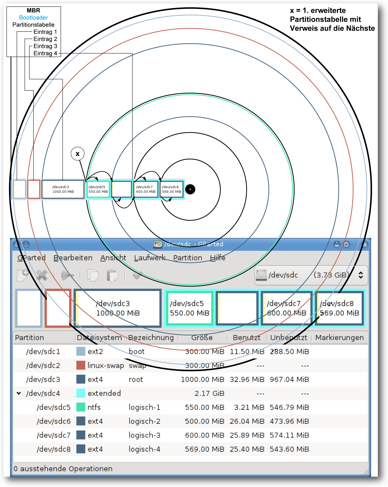
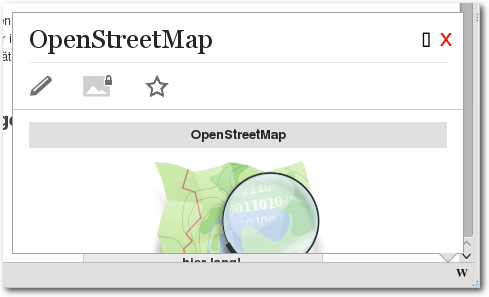
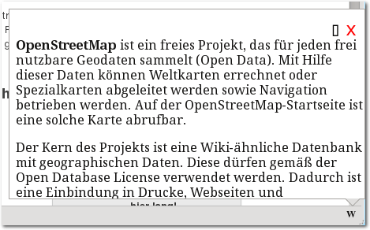
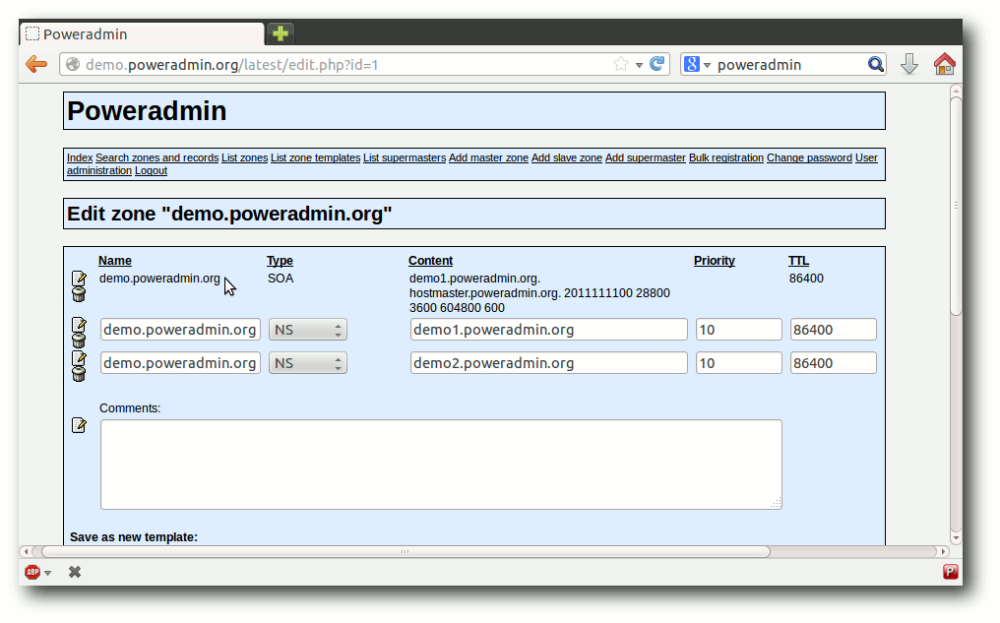

freiesMagazin Oktober 2013
(ISSN 1867-7991)
Topthemen dieser Ausgabe
Desaster Recovery mit Hilfe der richtigen Backup StrategieUnter dem Begriff Desaster Recovery versteht man in der Informationstechnik die Notfallwiederherstellung nach einem Ausfall von Hardware, Software oder Infrastruktur. Der Artikel soll die Grundlagen vermitteln, um Desaster Recovery zu verstehen und bei der Auswahl geeigneter Sicherungs- oder Wiederherstellungsmaßnahmen helfen. (weiterlesen)
PowerDNS – die andere VerBINDung
Für ein Projekt, bei dem skript-gesteuert DNS-Einträge gesetzt werden sollten, war der Autor auf der Suche nach einer gangbaren Lösung. Der Artikel zeigt, wie man mit Hilfe des Programms PowerDNS das Problem lösen kann. (weiterlesen)
Zum Index
Inhalt
Linux allgemeinDatenschutz als Illusion
Der September im Kernelrückblick
Anleitungen
Desaster Recovery mit Hilfe der richtigen Backup Strategie
Firefox-Erweiterungen mit dem Add-on-SDK erstellen – Teil VII: Netzwerk-Anfragen
Software
PowerDNS – die andere VerBINDung
Community
Rezension: Dropbox – Sicher speichern und effektiv arbeiten in der Cloud
Rezension: Android-Apps entwickeln für Einsteiger
Rezension: Node.js – Das umfassende Handbuch
Magazin
Editorial
Leserbriefe
Veranstaltungen
Vorschau
Konventionen
Impressum
Zum Index
Editorial
Auf Wiedersehen, svij!
Vor circa einem Jahr fing Sujeevan Vijayakumaran (kurz svij, weil sonst niemand seinen Namen richtig aussprechen kann) bei freiesMagazin als Redakteur an. In diesem Jahr unterstützte er das Team tatkräftig und übernahm vor allem den Kontakt mit den Autoren. Aus zeitlichen Gründen musste Sujeevan uns leider Anfang Oktober verlassen, sodass die Redaktion wieder nur aus zwei Mitglieder besteht. Es ist noch nicht klar, ob wir ein drittes Redaktionsmitglied suchen. Vorerst versuchen wir in der Redaktion mit vier Händen auszukommen. Wir danken Sujeevan für seine Hilfe im letzten Jahr und bleiben auf alle Fälle in Kontakt – was vor allem daran liegt, dass es Überschneidungen mit anderen Communitys gibt, wo man tätig ist.Ubucon 2013 in Heidelberg
In einer Woche ist es wieder so weit. Ab Freitag trifft sich die deutschsprachige Ubuntu-Community zur Ubucon 2013 in Heidelberg [1]. An drei Tagen steht ein 50-stündiges Programm an, wobei so gut wie jeder Linux-Aspekt abgedeckt wird. Angesprochen werden sowohl Einsteiger als auch fortgeschrittene Linux-Benutzer. Wer noch nie auf einem Linux-Event war, sollte unbedingt in Heidelberg vorbeischauen. Die Atmosphäre ist immer sehr freundlich und jeder Neue wird normalerweise sofort mit eingebunden. Und vielleicht erspäht man sogar den einen oder anderen freiesMagazin-Mitarbeiter.Neuer Programmierwettbewerb
In der letzten Ausgabe fragten wir, welche Aufgabe Teil des nächstens freiesMagazin -Programmierwettbewerbs werden soll. Die Ergebnisse der Umfrage wurden ausgewertet [2] und es gab eine recht deutliche Präferenz für das Tron-Spiel. Bei den potentiellen Wettbewerbsteilnehmern waren sowohl die Tron-Aufgabe als auch das Vegas-Spiel gleich beliebt. Leider können wir nicht garantieren, dass wir die Tron-Aufgabe bis Dezember 2013 umsetzen können. Das heißt, gegebenenfalls setzen wir zuerst die etwas einfachere Aufgabe des Vegas-Würfelspiels um. Das „Light Cycle Race“ wird aber auf alle Fälle kommen – vielleicht dann aber erst im nächsten Jahr. Und nun wünschen wir viel Spaß beim Lesen der neuen Ausgabe. Ihre freiesMagazin-Redaktion Links[1] http://ubucon.de/2013/
[2] http://www.freiesmagazin.de/20130909-ergebnisse-der-abstimmung-fuer-programmierwettbewerb
Das Editorial kommentieren
Zum Index
Datenschutz als Illusion
von Stefan Betz Es ist das Jahr 2013. Ein Jahr, in dem so gut wie jeder ständig gegen einen Grundsatz aus dem Datenschutz verstößt: die Datensparsamkeit. Hintergrund von diesem Grundsatz ist, dass man Daten, die nicht entstehen oder zumindest nicht gespeichert werden, auch nicht besonders schützen muss. Dieser Grundsatz ist eigentlich eine gute Idee, aber leider machen es gerade moderne Anwendungen immer schwerer, diesem Grundsatz zu entsprechen. Der Artikel soll weniger Lösungen aufzeigen, sondern eher zum Nachdenken anregen, was man mit seinen eigenen Daten macht. Ein weiterer Punkt ist ebenso wichtig: Viele verlassen sich beim Thema Datenschutz zu sehr auf Schlangenöl [1] wie Privatsphäreeinstellungen von Facebook (und anderen sozialen Netzwerken) oder die entsprechenden Einstellungen von dem Smartphone.Soziale Netzwerke
Gerade Facebook stellt ein sehr gutes Beispiel dar. Es gibt sehr viele Leute, die ihre Einstellungen sehr restriktiv gewählt haben. Eine (grundlegend) gute Idee, jedoch sammelt Facebook mit großer Wahrscheinlichkeit unabhängig von den Einstellungen trotzdem die Daten, da ein Filtern der Informationen an der Quelle wesentlich aufwändiger ist, als die Daten einfach im Benutzerprofil auszublenden. Wieder andere Menschen verwenden kein Facebook im Glauben daran, dass Facebook auf diese Art kein Profil über einen erstellen kann. Aber das stimmt nicht ganz. Es ist für Facebook egal, ob man einen Konto dort hat oder nicht, ein Profil wird dennoch erstellt. Andere soziale Netzwerke verhalten sich hier nicht wesentlich anders. Ermöglicht wird dies über große Werbenetzwerke und die fast überall vorhandenen „Social Buttons“ (Liken, Sharen, Retweeten), welche permanent das Surfverhalten aufzeichnen und zu einem ansehnlichen Profil zusammenfassen.Smartphones
Ein Smartphone ist nicht besser. Technisch gesehen handelt es sich dabei um tragbare PCs, auf welchen man Firmen wie Microsoft, Apple oder Google einen Administrationszugang geschenkt hat. Herr über seine Daten ist man auf diesen Geräten nicht. Das sind eher die eben genannten großen Anbieter, welche sich aktuell einen Kampf mit den Mobilfunkprovidern darüber liefern, wem der Kunde gehört. Dass ein Administrator auf einem System machen kann, was er will, ist den meisten bekannt. Nur so funktioniert z. B. auch die Remote-Installation oder Deinstallation von Anwendungen. Dass es für einen Administrator aber auch egal ist, ob die Standorteinstellungen datenschutztechnisch eher positiv gewählt wurden, ist für diesen zusätzlichen, freiwillig gewählten Administrator kein Hindernis.Shopping
Auch beim Einkaufen (nicht nur im Internet) verschenken viele Leute sehr gerne ihre Daten, Wünsche und Neigungen. Fast jeder hat schon über Amazon etwas bestellt und viele nutzen das Versandhaus ausschließlich. Der Dienst weiß dann, welche Filme man mag und welche Bücher man liest. Der Logout-Button ist dabei eine Illusion, falls jemand auf die Idee kommt, man könne sich einfach abmelden und alles wird gut. Für das Geschenk (die eigenen Daten) bekommen man von den Anbietern dann tolle Empfehlungen, die zum Kauf von anderen Artikeln verleiten sollen und die wir vielleicht sogar haben wollen. Am schönsten für diese Anbieter (Amazon, eBay, …) ist es aber, wenn man deren Browser-Add-on nutzt, um sich damit einen „Universal-Wunschzettel“ zu erstellen. Man ermöglicht damit, dass der Shop alle Bewegungen im Internet vollständig erfassen kann und das Profil, das bisher nur auf Einkäufe im Shop ermittelt wurde, wesentlich zu erweitern.Abhilfe
Es gibt es zwei Möglichkeiten, wie man mit dieser Situation umgehen kann:- Verhindern, dass die Daten entstehen
- Daten für eigene Zwecke verwenden
Verhinderung von Daten
Erst gar keine Daten entstehen zu lassen ist ohne Zweifel die sicherste Möglichkeit, um zu verhindern, dass man Daten liefert, die man nicht verteilen wollte. Hierzu gibt es sehr viele Möglichkeiten. Am wichtigsten sind sicherlich die Erweiterungen für den Browser wie z. B. Ghostery [2], Adblock Plus [3] oder auch HTTPS Everywhere [4]. Wenn man diese verwendet, sorgt man dafür, dass lästige Tracking-Dienste einen durch Werbung und Social-Media-Funktionen nicht mehr erfassen können. Man kann also selektiv wählen, wer die eigenen Daten bekommt. Je nach Einstellung erhalten die Entwickler dieser Erweiterungen noch einen Teil der Daten, aber diese sind uns (mehr oder weniger) bekannt und nicht zu vergleichen mit der anonymen Menge von mehreren Hundert Tracking-Diensten, die einen täglich erfassen. Beim Shopping eignet sich der private Browser-Modus prima als Zusatz. Hiermit kann man sehr bequem nach Musik, Filmen und anderen Produkte auf Amazon & Co. suchen, ohne das hinterlegte Profil zu erweitern. Erst bei der echten Bestellung wechselt man zurück in die normale Sitzung und kauft gezielt den ausgewählten Artikel. Das Resultat ist ein Profil mit Empfehlungen auf Amazon, die dem echten Kaufverhalten entsprechen und sehr wenig Angriffsfläche bietet für Dinge, die Amazon einfach nichts angehen. Zum Thema Verhinderung gehört auch die Auswahl an Diensten, welchen man die eigenen Daten anvertraut. So sollte man überlegen, bei welchen der großen sozialen Dienste wie Google+, Twitter oder Facebook man wirklich ein Konto benötigt. Wenn man nicht will, dass Dienste die eigenen Daten erhalten, dann sollte man ihnen diese auch nicht geben. Ein Foto, das man privat auf Facebook teilt, ist eben trotzdem ein Datensatz, der für Facebook vorhanden und nutzbar ist [5].Eigennützige Verwendung
Oft ist es aber so, dass man die Ermittlung und Speicherung von Daten nicht wirklich verhindern kann. Dinge, die auf seinem Android-Smartphone sind, sollte man wie Dinge behandeln, die man Google geschenkt hat. Hier sollte man sich nicht der Illusion hingeben, Herr über diese Daten zu sein. Aber man kann versuchen, aus der unangenehmen Situation das Beste zu machen: Die Daten zur eigenen Verwendung nutzen! Das kann dann auch ein Grund sein, wieso man Dinge wie den Android Device Manager oder die Standortfreigabe von Google+ nutzt, denn die Daten sind schon vorhanden, nur nicht einsehbar. Durch die Verwendung der Standortdaten oder der Remote Administration erhält man zumindest einen gewissen Komfort und zum anderen weiß man zumindest zu einem Teil, welche Daten (und Möglichkeiten) der Anbieter wirklich hat.Verschlüsselung
Verschlüsselung (insbesondere HTTPS [6]) ist für das Thema „Datenschutz als Illusion“ übrigens keine Lösung.Auch bei einer Ende-zu-Ende-Verschlüsselung [7] fallen noch sehr viele Daten (Metadaten [8]) an, welche für zahlreiche Zwecke ausreichend sind. Spätestens dann, wenn man große Anbieter wie Google oder Amazon nutzt, handelt es sich nur noch um eine Verschlüsselung für den Transport der Daten. Die Illusion, etwas zu verbergen, wird hierdurch beim Laien noch verstärkt, da diese oft glauben, dass Verschlüsselung etwas mit Datenschutz zu tun hat, was aber nicht zwangsläufig so ist. Links
[1] https://de.wikipedia.org/wiki/Schlangenöl
[2] https://www.ghostery.com/
[3] https://adblockplus.org/
[4] https://www.eff.org/https-everywhere
[5] https://de.wikipedia.org/wiki/HTTPS
[6] https://de.wikipedia.org/wiki/Ende-zu-Ende-Verschlüsselung
[7] https://de.wikipedia.org/wiki/Metadaten
| Autoreninformation |
| Stefan Betz (Webseite) ist Hobby-Administrator und gesellschaftskritischer Nerd mit einem Hang zu den Themen Sicherheit, Überwachung und Datenschutz. |
Diesen Artikel kommentieren
Zum Index
Der September im Kernelrückblick
von Mathias Menzer Basis aller Distributionen ist der Linux-Kernel, der fortwährend weiterentwickelt wird. Welche Geräte in einem halben Jahr unterstützt werden und welche Funktionen neu hinzukommen, erfährt man, wenn man den aktuellen Entwickler-Kernel im Auge behält.Linux 3.11
Für die Septemberausgabe von freiesMagazin hat es gerade nicht mehr gereicht, doch kurz nach deren Veröffentlichung gab Torvalds „Linux for Workgroups“ frei [1]. Die Änderungen zur vorangegangenen Entwicklerversion blieben überschaubar. So kann Linux 3.11 in vielerlei Hinsicht keine Superlative bieten: Es gab Kernel-Versionen, die mehr Änderungen auswiesen, und auch welche mit weniger Änderungen, auch die Anzahl der geänderten Quellcodezeilen liegt eher im Mittelfeld. Mit 64 Tagen Entwicklungszeit kommt man den Express-Kernels Linux 3.5 und Linux 3.10 zwar sehr nahe, aber immerhin haben es von den bislang 12 Versionen der 3er-Kernel-Serie immerhin fünf auf diesen Wert oder darunter geschafft. Womit der jüngste Spross der Linux-Kernel-Familie glänzen kann, muss also unter seinen inneren Werten gesucht werden. Die ARM-Architektur erhielt auch mit Linux 3.11 einen guten Teil Aufmerksamkeit. Sowohl auf 32- als auch 64-Bit-Systemen werden nun große Speicherseiten unterstützt. Dadurch wird die Zuweisung großer Mengen an Arbeitsspeicher verbessert, da hier auch größere Speicherstückchen als die sonst üblichen 4 KiB verwendet werden können. Der Gewinn liegt in einfacheren Abläufen in der Speicherverwaltung und schnelleren Zugriffen, da die genutzten Speicherbereiche eines Prozesses hierdurch weniger wild über den zur Verfügung stehenden Arbeitsspeicher verteilt werden. Ein zweiter Punkt ist die neu hinzu gekommene Unterstützung für die Virtualisierungslösungen KVM und Xen auf 64-Bit-ARM-Systemen, die somit künftig als Gastgeber für Virtuelle Maschinen in Betracht kommen. Nebenbei wurde mit einem Patch auch die Behandlung eines Registers (ein Speicherbereich innerhalb des Prozessors selbst) korrigiert. Dadurch wird nun die Ausführung von Windows-RT-Anwendungen unter Linux mittels Wine [2] ermöglicht, da Windows RT auf ARM basiert. Da Zugriffe auf den Auslagerungsspeicher recht zeitintensiv sein können, wird mit verschiedenen Mitteln versucht, dies zu vermeiden. Zswap geht hier einen neuen Weg, indem es Speicherseiten abfängt, die normalerweise wegen Speichermangels ausgelagert werden würden. Anstatt sie dann auf den üblicherweise auf einem Massenspeicher befindlichen Swap-Bereich zu verschieben, werden sie in einen im Arbeitsspeicher befindlichen komprimierten Bereich abgelegt. Obwohl auch bei Komprimierung und Entkomprimierung Verzögerungen auftreten, fallen diese doch meist nicht so schwerwiegend aus wie beim Zugriff auf eine Festplatte. Lustre [3] ist als Dateisystem für den Nutzer eines Linux-Desktop nicht direkt interessant, hat jedoch bereits eine lange Geschichte und zeugt von der Vielseitigkeit von Linux. Lustre wird bereits seit 1999 entwickelt, bislang außerhalb des Linux-Kernels, und wurde 2003 erstmalig bei einem Hochleistungs-Rechner-Verbund, dem MCR Linux Cluster [4], genutzt. Seither wird Lustre beständig weiterentwickelt; es kann mittlerweile zehntausende von Rechner-Knoten in einem Cluster bedienen und dabei mehrere Petabyte an Speicher verwalten, die über hunderte von Servern verteilt sein können. Es verwundert dann kaum noch, dass Lustre in sechs der Top-Ten-Supercomputer zum Einsatz kommt. Der nun in den Linux-Kernel aufgenommene und derzeit noch als experimentell markierte Code liefert die Client-Unterstützung, also den Zugriff auf ein Lustre-Dateisystem. Mit NFS wurde ein anderes, eher Nutzer-nahes Dateisystem weiterentwickelt. Der Standard NFS 4.2 ist noch nicht in trockenen Tüchern, doch die Arbeiten an der Umsetzung unter Linux laufen bereits. NFS 4.2 wird einige Verbesserungen bringen wie zum Beispiel Server-Kopiervorgänge. Bislang wurde beim Kopieren einer Datei von einem Verzeichnis eines Servers in ein anderes diese Datei erst aus dem Server-Verzeichnis auf den lokalen Rechner kopiert und von dort dann in das andere Serververzeichnis. NFS 4.2 ermöglicht nun, solche Operationen ausschließlich auf dem Server durchzuführen, was sowohl Zeit spart als auch die übertragene Datenenge gering hält. Eine weitere Änderung ermöglicht nun Labels für NFS, wodurch sich Regeln des Sicherheits- und Zugriffssteuerungsmechanismus SELinux nun auch auf NFS anwenden lässt. Das Flag O_TMPFILE ermöglicht die Erstellung spezieller temporärer Dateien. Diese werden zwar angelegt, sind im Dateisystem jedoch nicht sichtbar und werden gelöscht, sobald sie wieder geschlossen werden. Was sich zuerst etwas sinnfrei anhört, hat jedoch zwei sehr reale Anwendungsfälle: Zum einen werden hierdurch temporäre Dateien zum Beispiel für die Zwischenspeicherung von Daten möglich, die vor konkurrierenden Zugriffen sicher sind. Zum anderen können so auch Dateien erstellt und befüllt werden, die zuerst nicht zugreifbar sind, danach jedoch, mit anderen Rechten versehen, schnell zur Verfügung stehen können. Eine netzwerktechnische Neuerung soll die Wartezeit von Anwendungen auf die Weitergabe eingetroffener Netzwerkpakete verringern. Bei den heutigen Netzwerkbandbreiten ist es nicht sinnvoll, dass der Netzwerkstack ankommende Pakete mit einem Interrupt an das System meldet - die Unterbrechungen würden so häufig auftreten, dass ein Arbeiten kaum mehr möglich wäre. So werden lediglich ab und an Anfragen nach eingegangenem Verkehr an den Netzwerkstack gesendet. Dies geschieht in festen Intervallen, die jedoch in manchen Fällen zu lang sein können und dadurch zu unerwünschten Verzögerungen in Programmabläufen führen können. Nun können Anwendungen ein kürzeres Intervall für bestimmte Netzwerk-Sockets anfordern und damit die Wartezeiten in einzelnen Fällen reduzieren. Diese Funktion gibt es derzeit nur für drei Gerätetreiber, doch weitere werden bald folgen. Nutzer von Grafikkarten der Radeon-Familie werden sich freuen, dass erste Anstrengungen unternommen wurden, um das dynamische Energiemanagement dieser Geräte nutzen zu können. Bereits die betagten Grafikprozessoren der R600-Serie sollen dies unterstützen und von den Änderungen profitieren können, sobald die Entwickler den Code als stabil genug betrachten, um die „Experimental“-Markierung zu entfernen. Dies war lediglich ein kleiner Ausschnitt aus den Änderungen des jüngsten Linux-Kernels. Eine vollständige Auflistung bietet auch diesmal wieder die englischsprachige Seite Kernel Newbies [5]; dort findet sich auch eine Auflistung der Architektur-spezifischen Änderungen sowie neuer und erweiterter Treiber [6].Linux 3.12
Zwei Wochen nach Veröffentlichung von Linux 3.11 beendete Torvalds den Zeitraum für die Aufnahme großer Änderungen und gab Linux 3.12-rc1 [7] frei. Auch wenn der Ausfall der SSD seines Arbeitsrechners [8] kurz für Furore sorgte, hatte dies auf das Merge Window letztlich keine große Auswirkung. Auch der Name des Kernels hat sich wieder geändert - „Linux for Workgroups“ wurde zuerst „Suicidal Squirrel“ (Lebensmüdes Eichhörnchen) getauft, während zeitgleich das an Windows 3.11 erinnernde Bootlogo wieder entfernt wurde. Das vor ein Auto gelaufene Eichhörnchen wurde dann jedoch von einem Frosch getoppt, der während eines Raketenstarts ins Blickfeld einer Kamera geblasen wurde [9] und so lautet der Name nun „One Giant Leap for Frogkind“ (Ein großer Sprung für die Froschheit). Zu den Neuerungen zählt die Unterstützung für Kernel Modesetting [10] für die Grafikkomponente der häufig in Smartphones eingesetzten Snapdragon-Prozessoren. Unter anderem wird hierdurch der Einsatz einer HDMI-Schnittstelle vereinfacht, da die Einstellung der Grafikkomponente durch den Kernel selbst vorgenommen werden kann und nicht auf Userspace-Anwendungen zurückgegriffen werden muss. Ebenso wird die Unterstützung für Nvidias Optimus-Technologie [11] Einzug halten, die es ermöglicht, den GeForce-Grafikprozessor nach Bedarf zu aktivieren oder auszuschalten und entsprechend zwischen hoher Grafikleistung oder niedrigem Energieverbrauch wählen zu können. Bislang waren hierfür externe Treiber notwendig. Die zweite Entwicklerversion [12] konnte dann hauptsächlich mit Korrekturen, zum Beispiel an den Radeon-Treibern und am Dateisystem Btrfs aufwarten. Auch die Tätigkeiten am erst in Linux 3.11 eingeführten Dynamischen Energie-Management (DPM) der Radeon-Chips wurden fortgeführt. Letztlich war jedoch ein Teil der Kernel-Entwickler auf der LinuxCon und der Linux Plumbers Conference gebunden, sodass sich die Gesamtzahl der Änderungen recht beschaulich ausnahm. Das änderte sich auch bei Linux 3.12-rc3 [13] nicht. Auch hier entfielen wieder einige Änderungen auf Radeon-DPM. Einige Reverts, also Rücknahmen von eingepflegten Änderungen, gab es auch, hier hatte Andrew Morton einige Optimierungen für die Speicherverwaltung zu früh aufgenommen, da sich einige Entwickler über die Umsetzung der Änderung noch nicht einig sind. Links[1] https://lkml.org/lkml/2013/9/2/402
[2] https://de.wikipedia.org/wiki/Wine
[3] https://en.wikipedia.org/wiki/Lustre_(file_system)
[4] http://www.top500.org/system/167394
[5] http://kernelnewbies.org/Linux_3.11
[6] http://kernelnewbies.org/Linux_3.11-DriversArch
[7] https://lkml.org/lkml/2013/9/16/473
[8] https://plus.google.com/u/0/+LinusTorvalds/posts/V81f6d7QK9j
[9] https://plus.google.com/102150693225130002912/posts/9Gjr58KUJcH
[10] https://de.wikipedia.org/wiki/Mode-Setting#Mode-Setting_im_Kernel-Space
[11] https://de.wikipedia.org/wiki/Nvidia_Optimus
[12] https://lkml.org/lkml/2013/9/23/639
[13] https://lkml.org/lkml/2013/9/29/281
| Autoreninformation |
| Mathias Menzer (Webseite) behält die Entwicklung des Linux-Kernels im Blick, um über kommende Funktionen von Linux auf dem laufenden zu bleiben und immer mit interessanten Abkürzungen und komplizierten Begriffen dienen zu können. |
Diesen Artikel kommentieren
Zum Index
Desaster Recovery mit Hilfe der richtigen Backup Strategie
von Andreas Klein Unter dem Begriff Desaster Recovery [1] versteht man in der Informationstechnik die Notfallwiederherstellung nach einem Ausfall von Hardware, Software oder Infrastruktur. Der Artikel soll die Grundlagen vermitteln, um Desaster Recovery zu verstehen und bei der Auswahl geeigneter Sicherungs- oder Wiederherstellungsmaßnahmen helfen. Kommt es als Folge eines Ausfalls von Hardware, Software oder Infrastruktur zu einem Datenverlust, so hängt die gesamte Wiederherstellung maßgeblich von der Vollständigkeit und Aktualität der zuvor erstellten Datensicherungen ab. Um diese möglichst effizient zu gewährleisten, kann eine Kombination aus verschieden regelmäßig auszuführenden Sicherungsarten [2] zum Tragen kommen. Zwar gibt es einige auf dem Markt befindliche Komplettlösungen zur Notfallwiederherstellung, die alle ihre Vorzüge haben mögen und dennoch nie für alle Bedingungen gleichermaßen gut geeignet sein werden, genauso wenig wie es jenes sagenumwobene Fabelwesen, die eierlegende Wollmilchsau gibt [3]. Diese Speziallösungen sollen in diesem Artikel daher nicht besprochen werden. Stattdessen soll hier versucht werden, einige Grundlagen zu vermitteln, die helfen sollen, die Funktionsweise eines PC insoweit zu verstehen, als es um den Startvorgang, das Einlesen, Speichern und Reorganisieren dort verwendeter Datenstrukturen sowie deren Wiederherstellung geht. Zu diesem Zweck soll sich hier auf die Verwendung von weit verbreiteten Standardprogrammen beschränkt werden. Mit Hilfe dieser Grundlagen sollte die Wahl der jeweils erforderlichen Sicherungs- oder Wiederherstellungsmaßnahmen besser getroffen werden können. Auch die abschließende Beurteilung, ob und welches zu verwendende Sicherungsprogramm sinnvoll eingesetzt werden kann, basiert nicht zuletzt auf der Kenntnis dieser Grundlagen.Grundlagen der Datensicherung
Unter einer Datensicherung [4], versteht man das teilweise oder vollständige Kopieren der auf einem Computer vorhandenen Daten auf ein anderes (häufig transportables) Speichermedium oder Computersystem. Das Gegenteil dieser Datensicherung heißt Datenwiederherstellung. Zur Auswahl der passenden Backup-Strategie sind im Vorfeld ein paar Überlegungen anzustellen, wie z. B.- Was soll gesichert werden? (ein Betriebssystem, Nutzerdaten oder bestimmte Datenblöcke)
- Wieso soll gesichert werden? (gesetzliche Auflagen, privates Interesse)
- Wie viel soll gesichert werden? (Komplettbackup/differentielles Backup/inkrementelles Backup)
- Wie oft und wie schnell soll gesichert werden? (im laufenden Betrieb inkl. damit verbundener Ausfallzeiten, täglich)
- Wie und wie schnell soll der Zugriff auf die gesicherten Daten erfolgen? (einzelne Dateien oder Archivdatei, einzelne Blöcke oder Datenträger-Abbild/ Image)
Startreihenfolge von x86-Architektur-PCs
Nach dem Einschalten des PC erfolgt zunächst der POST [10], dann initialisiert das BIOS [11] die Hardware. Danach springt es zu dem im BIOS deklarierten ersten verfügbaren Boot-Device und liest dessen ersten Sektor in den Arbeitsspeicher. Falls der Sektor an seinem Ende mit der richtigen Signatur (55AA) versehen ist, führt das BIOS ihn aus. Ansonsten wird eine Fehlermeldung ausgegeben. Bei gültiger Signatur wird als Nächstes der Bootloader-Code ausgeführt, der unter anderem die Partitionstabellen auswertet, falls diese vorhanden sind (siehe VBR [12]). Das ist auch der Grund, warum einem Standard-BIOS nichts von der Existenz der einzelnen Partitionen bekannt ist. Der weitere Bootvorgang hängt maßgeblich vom ausgeführten Bootloader und der BIOS-Implementierung ab und kann daher recht unterschiedlich ausfallen, zumal es so etwas wie einen BIOS-Standard gar nicht gibt.Bootloader
Ursprüngliche Bootloader suchen in der Partitionstabelle nach einer sichtbaren, aktiven primären Partition. Ist diese vorhanden, so wird nach dem Prinzip des Chainloading [13] deren Boot-Sektor geladen und ausgeführt. Erst dadurch wird dann das eigentliche Betriebssystem geladen. Viele alternative Bootmanager halten sich nicht an diese Konvention und zeigen stattdessen ein Auswahlmenü oder Ähnliches an, um übersichtlich und flexibel das Booten auch von nicht als aktiv gekennzeichneten primären wie auch logischen Partitionen zu erlauben. Es gibt BIOS-Implementationen, bei denen das Booten aller Betriebssysteme fehlschlägt, falls keine oder mehrere Partitionen mit dem „active flag“ gekennzeichnet sind. Dabei benötigt vor allem Windows eine Partition mit dieser Kennzeichnung, um davon booten zu können. Besonders schlanke Bootloader finden vollständig Platz im MBR. Passt der Bootloader-Code dagegen nicht vollständig in die ersten 440 Byte des MBR, so wird meist in verschiedenen Stufen (Stages) gebootet. Diese verteilen sich über mehrere nacheinander zu ladende Dateien, die gelegentlich „Stage“ zuzüglich einer Nummer im Namen tragen. Besagte erste 440 Byte des MBR enthalten dann u. a. die erste Stufe. Der physikalische Speicherort der zweiten zu ladenden Stufe ist fest im Bootloader-Code des MBR als Verweis auf den als nächsten zu ladenden Sektor hinterlegt. Das ist nötig, weil zu diesem frühen Zeitpunkt noch kein Dateisystem-Treiber zur Verfügung steht, um die Datei unter ihrem Pfad ansprechen zu können. Nach dem Laden der zweiten Stufe steht dann ein Dateisystemtreiber zur Verfügung, um weitere zu ladende Stufen oder Dateien per Pfadangabe, also unabhängig von ihrer physikalischen Position (Sektor-Nummer) auf dem Datenträger, ansprechen zu können. Ein fehlender, verschobener oder defekter Bootloader im MBR eines zum Booten ausgewählten Laufwerkes führt dazu, dass nicht von der Festplatte gebootet werden kann, selbst wenn in einer seiner Partitionen ein intaktes Betriebssystem residiert. Gleiches gilt für die zweite zu ladende Stufe bei mehrstufigen Bootloadern.Master Boot Record (MBR)
Der Master Boot Record [14] ist der erste Datenblock (Sektor 0, Größe: 512 Byte) eines in Partitionen aufgeteilten Speichermediums wie beispielsweise einer Festplatte oder eines USB-Sticks. Optional kann der MBR auch einen Bootloader enthalten.| Aufbau des MBR | ||
| Adresse | Funktion/Inhalt | Größe (Bytes) |
| 0x0000 / 0 | Boot-Loader (Programmcode) | 440 |
| 0x01B8 / 440 | Disk-Signatur (seit Windows 2000) | 4 |
| 0x01BC / 444 | Null (0x0000) | 2 |
| 0x01BE / 446 | Partitionstabelle (4 Partitionen á 16 Byte) | 64 |
| 0x01FE / 510 | MBR-Signatur (0xAA55) | 2 |
| Gesamt | 512 | |
# if=/dev/zero of=<Festplatten-Device> bs=1 count=4 seek=440 conv=notrunc
überschreibt die Disk-Signatur mit Nullen, was für die Zuordnung von
Laufwerksbuchstaben zu Partitionen unter Windows (seit Version 2000) von
entscheidender Bedeutung ist.
DOS-Partitionstabelle (De-facto-Standard)
Nur der MBR beinhaltet die Partitionstabelle [7], welche die Aufteilung des Datenträgers beschreibt. Das Löschen der Partitionstabelle oder ein Defekt des MBR führen dazu, dass die Daten auf der Festplatte nicht mehr zugeordnet werden können. Es gibt drei Arten von Partitionen: primäre, erweiterte und logische Partitionen. Eine primäre Partition verweist auf einen Bereich der Festplatte, der Dateien enthalten kann. Eine erweiterte Partition enthält im Gegensatz dazu keine Dateien, sondern dient quasi als Container für weitere logische Partitionen. Daher sollte sie sinnvollerweise so groß gewählt werden, dass sie den verbleibenden Speicherplatz maximal ausnutzt. Die Summe aller darin erzeugten logischen Partitionen sollten wiederum den gesamten Platz der erweiterten Partition verwenden. Allerdings ist in der Partitionstabelle des MBR kein Platz übrig zum Verweis auf die logischen Partitionen. Aus diesem Grunde enthält eine vorhandene erweiterte Partition als relativen ersten Sektor den sogenannten Partitionssektor, der eine erweiterte Partitionstabelle enthält. Der Sektor ähnelt in seinem Aufbau dem des MBR, allerdings ohne dessen Bootloader-Code. Außerdem werden von den theoretisch möglichen vier nur die ersten zwei Einträge in der erweiterten Partitionstabelle genutzt. Der erste Eintrag beschreibt die logische Partition. Dessen Startsektor wird immer relativ zur Position dieser erweiterten Partitionstabelle angegeben. Der zweite Eintrag kann eine Verkettung zu einer weiteren erweiterten Partitionstabelle enthalten und hat immer den Typ 5 [16]. Im Startsektor dieses Eintrags wird immer relativ zum Sektor der ersten erweiterten Partition verwiesen. Diese wiederum bietet Platz für ein weiteres logisches Laufwerk und so fort. So entsteht quasi eine Kette von erweiterten Partitionstabellen, die jeweils ein logisches Laufwerk beschreiben. Erst durch diesen Trick wurde es möglich, mehr als vier Partitionen pro Festplatte zu verwenden. Der jeweils erste Sektor einer primären oder logischen Partition kann ebenfalls als Bootsektor bezeichnet und verwendet werden. Verteilung von MBR, Partitionen und erweiterten Partitionstabellen auf dem Datenträger.
Der Nachteil von logischen Partition besteht demnach darin, dass deren verkettete Partitionstabellen quer über die Festplatte verstreut sind. Diese erweiterten Partitionstabellen liegen jeweils im relativen ersten Sektor der entsprechenden logischen Partitionen. Das macht die Datensicherung aufwendiger und erhöht das Risiko von Datenverlust durch Anwenderfehler, da durch das Löschen einer logischen Partition auch alle folgenden nicht mehr sichtbar sind, selbst wenn deren Struktur noch vorhanden ist.
Kategorien der Backup-Programme
Zugriff auf Dateiebene
Programme, die auf Dateiebene arbeiten, wissen nichts über die physikalische Position oder Organisation der Daten auf der Festplatte, denn darum kümmert sich der Dateisystemtreiber des laufenden Betriebssystems. Deshalb muss dieser Treiber auch das zu sichernde Dateisystem unterstützen. Zu erkennen sind solche Programme daran, dass sich die Dateien im Zugriff befinden müssen, um diese sichern zu können. Betriebssystem-übergreifend gesprochen sind die Dateien also vom Anwender zu sehen, Linux-spezifisch ausgedrückt sind diese dabei eingehängt.Image-Programme
Image-Programme arbeiten eine Ebene tiefer, greifen also direkt auf die Hardware zu, um deren Datenblöcke bzw. Sektoren eigenständig auszulesen. Damit diese Image-Sicherungsprogramme nicht mit den Dateisystemtreibern des Betriebssystems kollidieren, sind die zu sichernden Partitionen vorher auszuhängen. Deshalb kann nicht ohne Weiteres von einer Partition, auf der ein Betriebssystem läuft, ein konsistentes Image-Backup [17] gezogen werden, es sei denn es handelt sich um ein Dateisystem mit Snapshot-Unterstützung. Daher empfiehlt es sich, von einer anderen Partition oder von einem Live-System zu starten. Größe, Struktur und Dateirechte der gesicherten Daten bleiben in der Image-Datei erhalten, deshalb kann diese auch problemlos auf Dateisystemen ohne Rechte-Unterstützung abgelegt werden, sofern deren maximale unterstützte Dateigröße nicht überschritten wird. Eine Wiederherstellung mit Standard-Tools ist nur auf einer mindestens gleich großen Zielpartition möglich. Ist sie größer, bleibt der überschüssige Platz solange ungenutzt, bis die Partition nachträglich vergrößert wird. Es gibt aber auch freie Speziallösungen wie zum Beispiel Clonezilla [18] zum Klonen von Images auf kleinere Zielpartitionen, unter der Voraussetzung, dass die Anzahl der belegten Quell-Datenblöcke nicht die Anzahl der zur Verfügung stehenden Ziel-Datenblöcke übersteigt. Doch auch diese komfortablen Werkzeuge können zuweilen an exotischen Aufgaben scheitern, so wie es kürzlich beim Klonen einer meiner Testsysteme geschah. Auszug aus der Clonezilla-Log-Datei:Unpacking grub-legacy (from .../grub-legacy_0.97-67_i386.deb) ...
[1;33mWarning! Found grub partition (/dev/sdb1) file system is ext4! The grub 1
from Debian Linux does not support file system ext4! Skip re-installing grub 1.
The restored OS might fail to boot.
Dann ist es nützlich, wenn man die Grundlagen zur manuellen Vorgehensweise
beherrscht.
[1;33mWarning! Found grub partition (/dev/sdb1) file system is ext4! The grub 1
from Debian Linux does not support file system ext4! Skip re-installing grub 1.
The restored OS might fail to boot.
Grundlegende Betrachtungen vor der Datensicherung
Auf einige Dateien eines laufenden Betriebssystems kann unter bestimmten Bedingungen nicht einmal lesend zugegriffen werden. Andere wiederum werden erst zur Laufzeit erzeugt oder verändern sich im Betrieb, wie z. B. Gerätedateien [19] oder temporäre Dateien [20]. Daher ist es nicht ohne Weiteres möglich, alle Dateien eines laufenden Betriebssystems konsistent zu sichern. Es bedarf dazu bestimmter Voraussetzungen wie z. B. Snapshot-fähiger Dateisysteme. Diese versuchen, alle Schreibzugriffe des laufenden Systems für einen Moment zu unterbinden, um von diesem Zustand dann einen Schnappschuss [21] zu erstellen. Auf Systemen ohne Snapshot-Unterstützung kann man, mit genauer Kenntnis der kritischen Dateien, diese von der Live-Sicherung exkludieren und somit den größten Teil der Dateien im laufenden Betrieb sichern – auch regelmäßig inkrementell. Dabei handelt es sich jedoch nicht mehr um ein Komplettbackup oder eine Eins-zu-eins-Kopie des laufenden Systems, auch wenn sich daraus mit zusätzlichem Aufwand wieder ein lauffähiges System erstellen lässt. Eine initial erstellte Vollsicherung sollte aber im Zweifelsfall wenigstens einmal vorhanden sein. RAID-Systeme [22] spiegeln permanent mindestens zwei Festplatten und erhöhen dadurch die Ausfallsicherheit gegen Festplattendefekte. Gegen Fehler wie z. B. versehentliches Löschen helfen sie jedoch nicht, weshalb der alte Leitspruch gilt: Ein RAID ist kein Backup und ersetzt es demnach auch nicht. All diese Techniken dienen in erster Linie dazu, wartungsbedingte Ausfallzeiten – auch zur Erstellung von Backups – auf ein Minimum zu reduzieren. Eine kurze Downtime spielt im privaten Umfeld aber eher eine untergeordnete Rolle, weshalb RAID- oder Snapshot-fähige Dateisysteme hier keine Voraussetzung sein sollen. Stattdessen sollen möglichst einfache und allgemeingültige Wege der Datensicherung aufzeigt werden. Als Ausgangspunkt zur Erzeugung eines vollständigen Systembackups soll eine beliebige Linux-Live-CD dienen. Als Voraussetzung sollten auf dieser folgende Pakete vorhanden sein: ntfs-3g, wenn NTFS formatierte Datenträger verwendet werden sollen, dd, rsync, netcat zum Klonen und Kopieren, sfdisk, fdisk, gdisk, gparted zum Partitionieren, ein simpler Text-Editor für Konfigurationsdateien und eine installationsfähige Version des bevorzugten Bootloaders zur Wiederherstellung. Natürlich muss die Live-CD zur verwendeten Hardware kompatibel, also darauf bootfähig sein. Sollen auch Programme unter einer grafischen Benutzer-Oberfläche, wie z. B. GNU-parted Verwendung finden, so muss darauf ebenfalls ein Windowmanager startfähig sein. Außerdem sollte man wissen, wie man auf dem Live-System die Root-Rechte erlangt. Sollte keine Live-CD vorhanden sein, kann man die schlanke und flexible SystemRescueCD [23] verwenden, die alle genannten Anforderungen abdeckt.Sichere in der Zeit, dann hast Du in der Not
Soll eine Datenwiederherstellung auf dem Ursprungsmedium sofort wieder bootfähig sein, so muss das bereits bei der Art der Datensicherung berücksichtigt werden, indem zumindest alle am Bootprozess beteiligten Sektoren mit absolutem Bezug mit gesichert werden. Vom MBR abgesehen ist es jedoch gar nicht so einfach herauszufinden, wo sich diese befinden, um nur gezielt diese zu sichern. Um solche Details braucht man sich nicht kümmern, wenn man stattdessen ein Image-Backup der gesamten Festplatte erstellt. Jedoch benötigt es sehr viel Zeit, solch eine Eins-zu-eins-Kopie der gesamten Festplatte zu erstellen. Zwar gibt es schneller sichernde Programme, die in der Lage sind, vom Dateisystem als unbelegt oder gelöscht gekennzeichnete Blöcke von der Sicherung auszusparen, woraus der Geschwindigkeitsvorteil resultiert. Das funktioniert jedoch nur bei vom Programm unterstützten Dateisystemen und somit nicht generell – ganz im Gegensatz zu dd. Dafür ist dd langsamer, da es alle Blöcke sequenziell liest. Angenommen, man hat einen PC oder einen Laptop mit vorinstalliertem proprietären Betriebssystem, von dem man weder eine Installations-DVD noch eine selbst erstellte Wiederherstellungs-DVDs besitzt. Eventuell kennt man sich noch nicht gut genug mit seinem System aus, um zu beurteilen, ob sich darauf versteckte Partitionen mit Wiederherstellungs-Images befinden, von denen im Bedarfsfall das System wiederhergestellt werden kann. Auch weiß man vielleicht nicht, ob auf der Festplatte zwischen den Partitionsgrenzen oder an bestimmten Sektorpositionen Daten abgelegt sind, die zum Funktionieren des Systems erforderlich sind. Man möchte aber den aktuellen Zustand der Festplatte sichern, um diese im Bedarfsfall genau so wiederherstellen zu können. Dann sollten man ein Image-Backup des gesamten Datenträgers erstellen, um auf der sicheren Seite zu sein. Hat man solch ein Backup erst einmal erstellt und gesichert, so kann man seiner Experimentierfreudigkeit ohne Reue freien Lauf lassen. Für den Fall, dass mal etwas nicht wie erwartet funktioniert, kann man durch ein Restore jederzeit wieder zum vorherigen Stand zurückkehren. So kann man gefahrlos z. B. freie Betriebssysteme installieren und testen, Dual- oder Mehrfach-Boot-Systeme nach persönlichen Vorlieben einrichten und weitere Erfahrungen sammeln. Bekanntlich führen viele Wege zum Ziel, weshalb man sich den individuell passenden heraussuchen sollte. Auf einem aktuellen Linux-Live-System würde die erste Festplatte des PC typischerweise als sda erkannt werden, die zweite dann als sdb, ganz gleich ob diese intern verbaut oder extern per USB verbunden ist. Die Laufwerksbezeichnungen muss man also an die jeweiligen Verhältnisse anpassen. In den Beispielen werden die Bezeichnungen sdx stets für den gesamten Datenträger stehen, sdxn für eine Partition des Datenträgers, wie z. B. sda1.Das hat sich in der Praxis bewährt, da durch stupides Abtippen keine Aktionen ausgelöst werden, sofern keine Platte sdx vorhanden ist.
Einstieg in die Praxis
Zuerst startet man den PC mit der Live-CD, holt sich die Root-Rechte und erzeugt einen Einhängepunkt zum Einhängen der Backup-Festplatte. In den Beispielen wird /mnt/backup benutzt, was man ggf. vorher selbst mittels mkdir -p /mnt/backup erstellen muss. Dann wird eine ausreichend große und mit dem Dateisystem seines Vertrauens formatierte Partition dort eingehängt:# mount /dev/sdxn /mnt/backup
Falls eine NTFS-formatierte Platte zur Sicherung verwendet werden soll, bindet
man sie so ein:
# ntfs-3g /dev/sdxn /mnt/backup
Die Festplatte, von der das Image-Backup gezogen wird, soll wie bereits erwähnt
nicht eingehängt sein.
Einen kurzen Überblick über die Laufwerksinformationen erhält man u. a. mit
lsblk.
Sichern auf Block-Ebene
Image Backups mit dd (dump device)
Die Umkehrung jedes Backup-Befehls zur Wiederherstellung wird zur Vervollständigung jeweils zusätzlich aufgeführt, im Text jedoch nicht mehr detailliert behandelt.# dd if=/dev/sdx bs=4MB of=/mnt/backup/Devname-sdx.img
# dd if=/mnt/backup/Devname-sdx.img of=/dev/sdx bs=4MB
Der erste Befehl erstellt ein Backup des gesamten Datenträgers in eine Image-Datei der exakt
gleichen Größe. Vorher muss sichergestellt werden, dass auf dem Zielmedium ausreichend Platz
vorhanden ist, da dd diesen nicht prüft.
In der resultierenden Image-Datei wird ungefähr der unbelegte Bereich des
Datenträgers an Platz verschwendet.
Möchte man diese Verschwendung vermeiden, so kann man die Image-Datei wie folgt
komprimieren:
# dd if=/mnt/backup/Devname-sdx.img of=/dev/sdx bs=4MB
# dd if=/dev/sdx bs=4MB | gzip --best > /mnt/backup/Devname-sdx.img.gz
# gunzip –c /mnt/backup/Devname-sdx.img.gz | dd of=/dev/sdx bs=4MB
Tipp zur Kompressionssteigerung:
Auch wenn die Platte aktuell vielleicht nur zu 30% belegt ist, so kann es sein,
dass durch vielfältige Dateioperationen in der Vergangenheit diese einmal bis zu
100% belegt war. Auch wenn diese einst belegten Sektoren nun wieder freigegeben
sind, so enthalten diese dennoch schlecht zu komprimierende Daten.
Soll also die komprimierte Image-Datei besonders klein werden, egal welches
Kompressionsverfahren verwendet wird, so ist vorher auf Dateiebene der gesamte
freie Platz der zu sichernden Festplatte oder Partition mit Nullen zu füllen,
indem diese in eine Datei geschrieben werden, die anschließend sofort wieder
gelöscht werden muss.
Ansonsten gäbe es unerwünschte Effekte
wegen Speichermangels, besonders wenn man
diesen Schritt als vorbereitende Maßnahme vor der Sicherung aus einem
laufenden Linux-System heraus durchführt.
Wenn man es jedoch von der Live-CD aus erledigen möchten, so muss man nun jede
der einzelnen Quell-Partitionen unter den zuvor erstellten Einhängepunkten
einhängen, z. B. unter /mnt/sdxn und diese dann voll schreiben.
# gunzip –c /mnt/backup/Devname-sdx.img.gz | dd of=/dev/sdx bs=4MB
# dd if=/dev/zero of=/mnt/sdxn/Null.txt; rm /mnt/sdxn/Null.txt
Die Partitionen sollten zur Sicherheit wieder ausgehängt werden und erst dann sollte man den vorigen dd-Befehl
zur Sicherung mit Kompression ausführen.
Angenommen, man unterliegt aufgrund des Dateiformates seines Ziel-Laufwerkes
einer Datei-Größenbeschränkung von 2 GB. Dann kann man die Image-Datei wie folgt
aufsplitten:
# dd if=/dev/sdx bs=4MB |gzip | split -b 2000m /mnt/backup/Devname-sdx.img.gz
# gunzip –dc /mnt/backup/Devname-sdx.img.gz | dd of=/dev/sdx bs=4MB
Übrigens: Die angegebene Blocksize (bs) von 4 MB deklariert die Speichermenge,
die von den Blöcken des Datenträgers in einem Durchgang in den Cache eingelesen
wird. Bei passend gewählten Werten, abhängig von der Hardware, kann man die
Lese-/Schreibgeschwindigkeit steigern. Dieser Wert muss also nicht zwingend der
Blockgröße des Datenträgers entsprechen, sondern sollte zur
Performance-Steigerung angepasst werden. Definiert man keine Blocksize, wird
als Standardgröße 512 Byte verwendet.
Die bs=block size – mit einem Wert von z. B. 32k, 512k, 1MB oder 4MB – hat aber nicht nur
Einfluss auf die Geschwindigkeit, sondern auch darauf, wie viele Daten bei
defekten Blöcken verworfen werden.
Um möglichst viele Daten zu retten, ist die
Blockgröße möglichst klein zu wählen, was jedoch die
Lese-/Schreibgeschwindigkeit verringert.
Wenn dd auf defekte Sektoren trifft, bricht es den Vorgang ab.
Mit der Option conv=noerror werden die defekten Blöcke dagegen einfach
übersprungen.
Die Zieldaten werden dadurch aber um so mehr gekürzt, je größer die Blockgröße
für das Auslesen der defekten Blöcke gewählt wurde. Daher gilt es bei defekten
Datenträgern, die Blocksize zu verringern, trotzdem wird das Ergebnis vom
Ursprung abweichen.
Das Programm ddrescue [24]
sorgt hier für Verbesserung des
Resultates und ist daher das Werkzeug der Wahl, wenn es um die Datenrettung von
defekten Datenträgern geht.
Durch geschicktes Parametrieren kann man sein Verhalten dahingehend steuern,
dass es im ersten Durchlauf nur die intakten Sektoren ausliest und die
Sektornummern mit Lesefehlern in eine Log-Datei schreibt, um sich diesen in
einem späteren zweiten Durchlauf intensiver zu widmen.
Diese Strategie erhöht die Chance, bis zum Totalausfall des Laufwerkes
möglichst viele Daten zu retten.
Die Anzahl der wiederholten Leseversuche pro Sektor lässt sich entsprechend
über Parameter steuern.
Jede damit gerettete Information ergänzt so nachträglich die im ersten
Durchlauf erzeugte Image-Datei.
Eine von vielen Möglichkeiten, dies zu erreichen, könnte so aussehen:
# gunzip –dc /mnt/backup/Devname-sdx.img.gz | dd of=/dev/sdx bs=4MB
# ddrescue -f -v -n /dev/sdx /mnt/backup/rescue.img /mnt/backup/rescue.log
# ddrescue -d -f -r10 /dev/sdx /mnt/backup/rescue.img /mnt/backup/rescue.log
Das mit ddrescue gerettete Image kann man wieder mit dd, so wie im ersten
Restore-Beispiel gezeigt, auf eine intakte, mindestens gleich große Festplatte
wiederherstellen.
Sinnvoll ist auch die eindeutige Benennung der Image-Dateien, damit eine
spätere Zuordnung zweifelsfrei erfolgen kann.
Beispielsweise könnte durch Hardware-Veränderungen des Systems sdc zu sdb
werden. Auch die UUID ist nicht unbedingt beständig oder eindeutig, da eine
geklonte Partition dieselbe UUID wie deren Ursprung erhält.
Das sorgt für interessante Effekte bei zwei Festplatten in einem System mit
gleicher UUID, wenn diese mit nur einem UUID-Eintrag in der fstab nacheinander
eingebunden werden. Empfehlenswert ist daher die Vergabe eindeutiger Namen für die
Sicherungs-Images, z. B. anhand der Ausgabe von ls -l /dev/disk/by-id/ der
jeweils geklonten Platte oder Partition.
Noch ein Tipp für alle ungeduldigen Zeitgenossen, die während lange andauernder
dd-Operationen die Ungewissheit plagt, ob das Programm vielleicht abgestürzt sein
mag oder wie weit es wohl fortgeschritten ist.
Man kann dd den aktuellen Status entlocken, indem man es kurz anhält, allerdings
ohne es gänzlich abzubrechen.
Am besten auf einer anderen Konsole oder einem anderen
X-Terminal so:
# ddrescue -d -f -r10 /dev/sdx /mnt/backup/rescue.img /mnt/backup/rescue.log
# killall -USR1 dd
oder wiederkehrend alle (N) Sekunden:
# watch -n N kill -USR1 `pidof dd`
Um den Status zu sehen, muss man zurück auf die vorherige Konsole wechseln. Zum Beenden
der Ausgabe, muss man den watch-Befehl mit „Strg“ + „C“ abbrechen.
Weitere nützliche Tipps zu dd lassen sich
auf Wikipedia [25]
nachlesen.
Natürlich kann man aus einem Image der gesamten Festplatte auch gezielt einzelne
Bereiche extrahieren.
So kann man beispielsweise nur den in den ersten 440 Byte enthaltenen Bootloader
Wiederherstellen:
# dd if=/mnt/backup/Devname-sdx.img of=/dev/sdx bs=440 count=1
oder aber den gesamten MBR wiederherstellen:
# dd if=/mnt/backup/Devname-sdx.img of=/dev/sdx bs=512 count=1
Möchte man aus dem zuvor erstellen Image einzelne Dateien extrahieren, so braucht man das Image nur in einen existierenden Einhängepunkt, hier /mnt/Image-sdx, wie folgt einhängen:
# mount -o loop /mnt/backup/Devname-sdx.img /mnt/Image-sdx
Danach kann man per copy, rsync oder einem Dateimanager einzelne
Dateien kopieren oder auch ganze Verzeichnisbäume synchronisieren.
Wer statt eine Image-Datei zu erstellen lieber gleich den gesamten Datenträger
auf einen anderen, mindestens gleich großen klonen möchte, könnte zum Beispiel
so vorgehen:
# dd if=/dev/sdx of=/dev/sdy
Schneller geht es mit
# dd if=/dev/sdx of=/dev/sdy bs=4MB
Ist der Zieldatenträger größer, so ist der überschüssige Platz erst einmal nicht
nutzbar. Um diesen Platz zu erschließen, muss man entweder die jeweils letzte
Partition in ihrer Größe aufziehen oder stattdessen eine weitere dahinter
anlegen, die den verbleibenden Platz ausnutzt.
Per Kommandozeile könnte ein Befehl für ein ext-Dateisystem dann zum Beispiel so
aussehen, dies ist aber im Bedarfsfall zu prüfen und anzupassen:
# e2fsck -f -y /dev/sdyn; resize2fs -p -f /dev/sdyn
Sehr komfortabel und intuitiv für viele unterstützte Dateisysteme geht das
Gleiche mit dem Programm GNU-parted unter einer grafischen Oberfläche.
Dasselbe gilt natürlich beim Klonen der Festplatte mit dd über ein sicheres
internes Netzwerk, z. B. unter Verwendung von Netcat [26].
Dazu gilt es, zuerst den Zielrechner mit der Live-CD zu starten, Root-Rechte
zu erlangen, die Netzwerkkarte einzurichten, die IP-Adresse zu notieren, die Zielplatte
nicht einzuhängen und dort mit diesem Befehl beginnen, da hierdurch ein auf Port
1234 lauschender Server-Dienst gestartet wird, der sich nach einmaliger
Ausführung beendet.
Auf dem Zielrechner (der die Daten empfängt):
# nc -l -p 1234 | dd of=/dev/sdx bs=2MB
Auf dem Quellrechner (der die Daten versendet):
# dd if=/dev/sdx bs=2MB | nc IP.of.Target 1234
IP.of.Target ist durch IP-Adresse des Zielrechners zu ersetzen. Der Port ist nahezu
beliebig, muss aber auf beiden PCs gleich lauten.
Weniger ist manchmal mehr
Der Nachteil dieser alles umfassenden Sicherung wird aber stets die benötigte Zeit bleiben, worunter naturgemäß deren Aktualität leidet. Steht diese im Vordergrund, so wird man sich andere Sicherungsstrategien wünschen. Kleinere Einheiten lassen sich schließlich schneller sichern und begünstigen dadurch regelmäßigere Sicherungen. Kennt man sein System gut genug, um zu wissen, ob und welche Teile man auf Block-Ebene sichern muss, so kann man diese entsprechend gezielt per Image sichern. Den Rest des Systems, erst recht die Nutzerdaten, kann man dann auf Dateiebene sichern, inkrementell oder differenziell, um Zeit zu sparen und um durch regelmäßige Backups die Sicherheit zu erhöhen. So ist man im Fehlerfall durch gezielte Wiederherstellung der betroffenen Programme oder Dateien schnell wieder einsatzbereit.MBR sichern
Wie bereits erwähnt enthält der MBR das gesamte Partitionsschema, falls der Datenträger nur primäre Partitionen verwendet. Der folgende Befehl führt das Backup durch:# dd if=/dev/sdx of=/mnt/backup/MBR_von_sdx.img bs=512 count=1
Ein Restore ist mit dem folgenden Befehl möglich:
# dd if=/mnt/backup/MBR_von_sdx.img of=/dev/sdx bs=512 count=1
Ein Restore des Bootloaders kann mit diesem Befehl erledigt werden:
# dd if=/mnt/backup/MBR_von_sdx.img of=/dev/sdx bs=440 count=1
Zum Überprüfen kleiner MBR-Images kann das Kommando hexdump
oder für größere Images auch file Dateiname.img verwendet werden.
Achtung: Beim Restore des gesamten MBR wird auch die Partitionstabelle
überschrieben. Dies kann zu Datenverlust führen, wenn nach der letzten Sicherung
des Bootsektors die Partitionierung geändert wurde. Mit bs=440 bleibt die
Partitionstabelle dagegen erhalten, weil dabei nur der Bootloader
zurückgeschrieben wird (siehe auch Aufbau des MBR [14])!
Partitionsschema inkl. erweiterter Partitionstabellen sichern
Bei der Verwendung von mindestens einer logischen Partition, also z. B. ab sdx5 aufwärts, wird der Befehl sfdisk aus dem Paket util-linux empfohlen. Der Parameter -d, auf eine Platte angewandt, zeigt die Partitionstabelle an:# sfdisk -d /dev/sdx
Diese kann man nun sichern:
# sfdisk -d /dev/sdx > /mnt/backup/extPartTable_sdx.sf
Ein Restore kann man dann ebenfalls durchführen, die Platte muss aber dabei ausgehängt sein:
# sfdisk /dev/sdx < /mnt/backup/extPartTable_sdx.sf
Beim Wiederherstellen sollte man gleich zuerst zumindest den Bootloader oder aber den gesamten MBR
mithilfe von dd wiederherstellen, bevor man dann das gesicherte Partitionsschema inklusive aller
erweiterten Partitionstabelle(n) wiederherstellt. Danach muss ein Neustart oder
das Aushängen und wieder Einhängen dieses Geräts oder der Befehl partprobe
erfolgen, damit die neue Tabelle dem Kernel aktiv bekannt gemacht wird.
Sollte jedoch die Partitionstabelle defekt und die Daten auf der Platte
sehr wichtig und man sich selbst nicht vollständig sicher
sein, dass man auch wirklich die aktuelle Partitionssicherung von dieser Platte
vor sich hat, empfiehlt sich eher, die Reparatur einer defekten
Partitionstabelle [27]
zu versuchen, da sonst die Daten darauf inkonsistent werden.
Dazu wird mit Testdisk [28] die
Platte untersucht, um die gefundenen Partitionstabellen-Fragmente und/oder
Filesystem-Markierungen wieder zu einer Partitionstabelle zusammenzusetzen.
Für weitere Sonderfälle gibt es einen guten Artikel bei linupedia.org [29].
Hinweis: Aktuell ist eine Partitionstabelle, wenn es nach ihrer Erstellung keine
Repartitionierung des zugrunde liegenden Datenträgers gegeben hat (selbst wenn
das Jahre her ist und die Dateien darauf tausendfach verändert wurden).
GPT sichern
Falls der Datenträger anstelle einer DOS-Partitionstabelle mit herkömmlichem MBR bereits das neuere Partitionsschema GPT [8] verwendet, welches bis zu 128 primäre Partitionen ermöglicht, lässt sich ein Backup wie folgt erstellen:# dd if=/dev/sdx of=MBR_von_sdx.img bs=512 count=34
Folglich lautet der Befehl zum Restore:
# dd if=MBR_von_sdx.img of=/dev/sdx bs=512 count=34
Mit diesem Befehl lässt sich das GPT-Schema löschen:
# dd if=/dev/zero of=/dev/sdx bs=512 count=34
Einzelne Partitionen sichern
Die Vorgehensweise ist identisch wie zuvor beim Sichern der gesamten Datenträger, lediglich die Bezeichnungen sind entsprechend zu ändern (statt sda gibt man nun sda1 bzw. die entsprechende Nummer n an).# dd if=/dev/sdxn bs=4MB of=/mnt/backup/PartName_sdxn.img
Versteckte Daten sichern
Gesichert wird zwischen dem MBR und dem Beginn der ersten Partition. Diese Bereiche werden gelegentlich von Recovery-Tools oder Bootloadern genutzt. Dazu gilt es auf dem jeweiligen Datenträger herauszufinden, in welchem Sektor die erste Partition beginnt und welche Sektorgröße dieser verwendet. Das Beispiel zeigt typische 512 Byte/Sektor an:# sfdisk -d /dev/sda
Device Boot Start End #sectors Id System
/dev/sda1 63 81915434 81915372 83 Linux
/dev/sda2 81915435 163830869 81915435 83 Linux
/dev/sda3 * 163830870 245746304 81915435 83 Linux
/dev/sda4 245746305 976768064 731021760 83 Linux
Hier beginnt die erste Partition an Sektor 63. Es soll alles zwischen MBR und
Sektor 63 gesichert werden:
Device Boot Start End #sectors Id System
/dev/sda1 63 81915434 81915372 83 Linux
/dev/sda2 81915435 163830869 81915435 83 Linux
/dev/sda3 * 163830870 245746304 81915435 83 Linux
/dev/sda4 245746305 976768064 731021760 83 Linux
# dd if=/dev/sda of=/Pfad/src-hidden-data.img skip=1 bs=512 count=62
62+0 records in
62+0 records out
31744 bytes (32 kB) copied, 0,00106052 s, 29,9 MB/s
9 Sichern auf Dateiebene
62+0 records in
62+0 records out
31744 bytes (32 kB) copied, 0,00106052 s, 29,9 MB/s
9 Sichern auf Dateiebene
Sichern auf Dateiebene
Dabei kann sogar der Zieldatenträger kleiner sein als seine Quelle, vorausgesetzt der belegte Platz reicht aus. Partitionen, in denen Programme enthalten sind, bei welchen die Sektorposition eine Rolle spielt, sind aber weiterhin per Image zu klonen, da es sonst zu Problemen kommt. Linux-Systeme sind von solchen Restriktionen eher nicht betroffen – vom Bootloader einmal abgesehen. Dieser kann jedoch entweder wie zuvor gezeigt per dd separat übertragen werden oder man installiert ihn nachträglich manuell. Diese Vorgehensweise eignet sich auch sehr gut zum Umsortieren von Partitionsschemata, z. B. für den Fall, dass die auf dem Quelldatenträger weit hinten liegende System- und Swap-Partitionen auf dem Zieldatenträger weiter nach vorn verlagert werden sollen. Oder vielleicht will man beim Übertragen der Daten von der Quelle zum Ziel das Dateisystem konvertieren, vielleicht von Reiser zu ext4 oder von ext4 zu Btrfs. Bei gewünschter Weiterverwendung muss man das Partitionsschema von der Quell- zur Zielplatte übertragen. Ansonsten kann man nach neuen Bedürfnissen und Platzverhältnissen die Partitionen manuell auf der Zielplatte anlegen, formatieren und benennen. Besonders komfortabel geht das alles in einem Durchgang mit GNU-parted. Im folgenden Beispiel soll das o. g. Partitionsschema von sda als Quelle dienen. Dieses kann auf sdb übertragen werden oder aber es wird manuell dort mit dem Programm der Wahl erstellt. Die Partitionen im Ziel muss man dann ggf. mit dem neuen Dateisystem formatieren.Sichern durch Kopieren
Nun muss man unterhalb von /mnt folgende Einhängepunkte erzeugen: sda1 bis sda4 und ebenso für sdb1 bis sdb4. Dann muss man die Partitionen entsprechend zugeordnet einhängen:# mount /dev/sda1 /mnt/sda1
bis
mount /dev/sda4 /mnt/sda4
sowie die analogen Befehle für sdb.
Nun gilt es alle Inhalte von sda1 nach sdb1, sda2 zu sdb2 etc. zu kopieren, egal
ob auf der Konsole mit cp oder mit dem Dateimanager der Wahl. Dann sollte man
jedoch daran denken, alle Dateien einzuschließen.
# cp -a /mnt/sda1/* /mnt/sdb1
falls cp selbst -f („force“) stets interaktiv ist,
hilft der Aufruf mit absolutem Pfad.
# /bin/cp -a(u,f) /mnt/sda1/* /mnt/sdb1
ist für das Update bereits vorhandener Dateien.
Soll dagegen die Reihenfolge der Partitionsinhalte geändert werden, so werden
statt einer eins-zu-eins-Kopie die Daten durch das Kopieren verlagert.
Beispiel: Das System liegt im Quell-Datenträger auf sda3, soll nun aber im
Zieldatenträger physikalisch möglichst weit nach außen, also auf sdb1 geraten, um die Zugriffszeit zu verringern.
Dann würde man analog dazu entsprechend umstellen und später noch die fstab und
abhängig vom Bootloader, zum Beispiel die grub.conf entsprechend anpassen.
Noch flexibler geht das alles jedoch mit Rsync.
Sichern mit Rsync
Das Synchronisierungsprogramm bietet Optionen, um Dateieigenschaften zu erhalten, arbeitet mit SSH zusammen und eignet sich ideal, um auch große Datenmengen schnell, auch übers Netzwerk (auch via Internet, dann aber besser Verschlüsselt mit -e), zu übertragen. Besonders vorteilhaft ist Rsync, wenn auf der Zielseite schon eine ältere Kopie vorliegt, denn es überprüft, welche Unterschiede zwischen Quelle und Ziel existieren und überträgt nur die geänderten Teile der Daten. Rsync vergleicht die Daten zweier Speicherorte miteinander. Der grundsätzliche Aufruf lautet daher:# rsync [Optionen] Quelle Ziel
Hier ist die Wahl von Quelle und Ziel entscheidend. Zu beachten ist vorher,
in welche Richtung man synchronisiert, um einen Datenverlust auszuschließen.
Rsync bietet eine Hilfe zum Prüfen des Datentransfers: Zusammen mit der Option
-n startet das Programm lediglich einen Testlauf und verrät, welche Operationen es
durchführen möchte.
Es folgen ein paar simple Beispiele zu den vielfältigen Kombinationsmöglichkeiten, in
Anlehnung an die obigen cp-Befehle.
Hinweis: Der Parameter -a beinhaltet die häufig erforderlichen Parameter
-rlptgoD. Beide Variationen erfordern allerdings Root-Rechte.
# rsync -a --progress --stats --del /mnt/sda1/ /mnt/sdb1/
Wichtig ist jeweils der abschließende Schrägstrich nach der Pfadangabe, im
Gegensatz zum vorherigen cp-Befehl.
--progress zeigt den Fortschritt an, benötigt allerdings zusätzliche Zeit, --stats
zeigt die Übertragungsstatistik erst am Ende, --del löscht noch während der
Übertragung auf dem Ziel Dateien, die auf dem Quelldatenträger nicht vorhanden sind.
Weitere Parameter mit den zugehörigen Erklärungen zu den hier verwendeten findet man in der Manpage.
Das ganze sollte man dann für alle Partitionen durchführen, entweder nacheinander oder
gleichzeitig von verschiedenen Konsolen aus.
Wer sein System bereits vollständig geklont hat und es als Zweitsystem im
gleichen Rechner verwendet, der musste einige Anpassungen der Pfade an fstab und
zum Beispiel grub.conf vornehmen.
Wenn man die Systeme auf die hier beschriebene Art nur
aktualisieren möchte, so ist es sinnvoll die geänderten Dateien oder besser den
gesamten Bootloader vom Synchronisieren durch Rsync auszuschließen:
# rsync -a --del --exclude=/boot/ --exclude=/etc/fstab /mnt/sda1/ /mnt/sdb1/
Wer viel und regelmäßig zu exkludieren hat, schreibt die Pfade und Dateien besser in
eine Textdatei untereinander.
Dann kann man diese mit --exclude-from=Exclude_Datei als Option einbinden und muss
sie nicht jedes Mal erneut eingeben.
Möchten man unter den oben genannten Vorbedingungen die gleichen Partitionen mittels
Rsync übers Netzwerk auf die Festplatte eines anderen Rechners übertragen, so
sähe der Rsync-Aufruf so aus. Auf dem Quellrechner:
# rsync -a --progress --del /mnt/sda1/ root@IP.of.Target:/mnt/sdb1/
Auf dem Zielrechner:
# rsync -a --progress --del root@IP.of.Source.PC:/mnt/sda1/ /mnt/sdb1/
Anschließend wird man aufgefordert, das Root-Passwort des jeweils anderen PC
einzugeben (sofern die Authentifizierung nicht über SSH-Schlüssel läuft), bevor die Übertragung beginnt. Das gelingt natürlich nur, wenn dort
bereits der ssh-Daemon läuft und wenn sich die beiden Rechner im gleichen
Subnetz befinden.
Bei IP.of.Target muss man die IP-Adresse des Zielrechners einsetzen, bei
IP.of.Source dagegen die IP des Quellrechners.
Nutzerdaten sichern
Möchte man lediglich regelmäßig alle seine Nutzerdaten auf eine separate Festplatte sichern und das aus einem installierten Linux heraus, also ohne eine Live-CD zu booten, so braucht man lediglich dafür Sorge zu tragen, dass kein Nutzer angemeldet ist. Dann wechselt man auf die Konsole als root, hängt die Sicherungsplatte ein, zum Beispiel wieder unter /mnt/backup und kopiert wiederum per cp oder dem Dateimanager, unter Einschluss aller versteckten Dateien, entweder das gesamte /home Verzeichnis oder nur einzelne ausgewählte Verzeichnisse auf das Sicherungsmedium. Alternativ und etwas einfacher kann man natürlich Rsync benutzt. Man synchronisiert das /home-Verzeichnis zum Sicherungsmedium mittels des Befehls:# rsync -a --progress --del /home/ /mnt/backup/
Vielleicht auch ohne --delete Anweisung, für den Fall, dass die in der Quelle
nicht mehr existenten Dateien noch in dem Backup bewahrt werden sollen, falls
dafür noch genügend Platz zur Verfügung steht.
Bootloader nachträglich installieren/reparieren
Vielleicht hatte der eine oder andere schon einmal das Problem, dass der Bootloader beschädigt wurde und das System nun nicht mehr startfähig war. Die Gründe dafür können vielfältig sein.- Die Installation eines anderen OS oder einer zusätzlich installierten Distribution hat, womöglich ohne Rückfrage oder durch eigenen Irrtum, den bisherigen Bootloader überschrieben.
- Die Bootloader-Installationsroutine der Distribution schlägt aus unerfindlichen Gründen fehl.
- Ein Distributionsupgrade/Kernelupdate schlägt fehl und der PC bootet nicht mehr. Der Installer bietet keine separate Installationsroutine für den Bootloader an, eine Neuinstallation wäre dadurch erforderlich.
- Man hat mehrere Distributionen parallel installiert und möchte dafür Sorge tragen, dass jede ihren eigenen Bootloader mitbringt, damit sie sich bei künftigen Updates nicht mehr gegenseitig beeinflussen. Stattdessen möchte man lieber die einzelnen Bootloader per Chainloading miteinander verbinden.
- Die Vorgabe der Distribution gefällt nicht, weshalb man deren Bootloader durch einen anderen ersetzen möchte.
- Man hat sein System geklont, die neuen Rahmenbedingungen machen nun eine Neuinstallation des Bootloaders erforderlich.
GRUB – Grand Unified Bootloader
GRUB (Legacy) in der Versionen 0.9x war bis vor kurzem der am häufigsten verwendete Bootloader unter Linux. Allerdings wird er nicht mehr aktiv weiterentwickelt, er funktioniert aber nach wie vor auf den meisten Systemen recht zuverlässig. GRUB2 wird seit Version 2.x als stabil bezeichnet und gewinnt – nicht zuletzt durch seine UEFI-Unterstützung [9] – stetig an Bedeutung. Die folgenden Informationen sollen die notwendigen Kenntnisse vermitteln, um GRUB auch nachträglich korrekt installieren und reparieren zu können, was im Fehlerfall extrem hilfreich sein kann. Auch sollte hierdurch klar werden, warum sich GRUB nicht ohne Weiteres vollständig sichern lässt, ohne ein Image-Backup der gesamten Festplatte zu erstellen, was oftmals nicht gewünscht oder nicht hilfreich ist. Ein Linux-Bootloader hat eigentlich nur die Aufgabe, den Kernel und die ggf. zugehörige initramdisk in den Arbeitsspeicher zu laden, sodass der Kernel starten kann.Diese beiden Dateien werden meist als vmlinuz und initrd bezeichnet, oft aber auch als kernel+Name+Arch.+Vers.Nr. und als initramfs+Name+Arch.+Vers.Nr. benannt. Gespeichert sind diese dann auf einem von Linux lesbaren Dateisystem wie z. B. ext, jfs, reiserfs, xfs, etc. Innerhalb dieses Dateisystems lautet der Speicherort der beiden Dateien meist /boot oder sie liegen im Root-Verzeichnis /. Das Problem ist, dass normale Programme die Unterstützung des laufenden Betriebssystems benötigen, um auf ein Dateisystem zugreifen zu können. GRUB kann also nicht die Betriebssystem-Unterstützung verwenden, um auf das Dateisystem zuzugreifen, da das Betriebssystem zum Einschaltzeitpunkt des PC ja noch nicht zur Verfügung steht. Natürlich kann man auch ohne Dateisystem-Unterstützung Dateien in den Speicher laden, indem man eine statische Liste der Sektoren verwendet, die mit den jeweiligen Start- und Endpunkten der zu ladenden Dateien korrespondiert. So arbeiten einige andere Bootloader. Das hat jedoch den Nachteil, dass bei einer Änderung von Position oder Größe der zu ladenden Dateien, z. B. nach einem Kernelupdate, diese Liste vor dem nächsten Startvorgang aktualisiert werden muss, da sonst das System nicht mehr bootet. GRUB dagegen ist flexibler, denn es ist in der Lage, auf das Dateisystem zuzugreifen, um die Dateien zu laden. Dadurch spielt es keine Rolle, ob diese in ihrer Größe oder Lage innerhalb ihres Suchpfades nachträglich verändert wurden. Diese Flexibilität hat allerdings auch ihren Preis, weshalb GRUB so groß wurde, dass er in bis zu drei Stufen ausgeführt werden muss.
Funktionsweise von GRUB1 und den drei möglichen Stufen
Beim Systemstart wird zuerst die kleine Stage 1 aus den ersten 440 Byte des MBR eingelesen und ausgeführt. Diese Stage 1 zeigt statisch auf den Beginn des Sektors, in dem sich die nächste zu ladende Stage befindet. Falls vorhanden, ist es die Stage 1.5, ansonsten wird direkt die Stage 2 geladen. Wird also nachträglich die Position der zweiten zu ladenden Stage-Datei (1.5 oder 2) verändert, so kann GRUB nicht mehr korrekt starten. Die statische Verknüpfung wird bei der GRUB-Installation in der Stage 1 erzeugt. Falls die mittelgroße Stage 1.5 vorhanden ist, so enthält diese den Dateisystemtreiber für den dynamischen Zugriff – also per Partitionsnummer und Dateipfad – auf das Dateisystem, unter dem die Stage 2 sowie alle zugehörigen GRUB-Dateien gespeichert sind. In diesem Fall kann die Stage-2-Datei nachträglich gefahrlos verschoben werden. Es gibt für die unterschiedlichen Dateisysteme viele unterschiedliche Stage-1.5-Dateien, von denen jedoch nur die eine benötigte installiert wird. Stage 2 ist die größte aller Stufen. Sie enthält die Dateisystemtreiber für alle von GRUB unterstützten Dateisysteme, stellt das Bootmenü dar und ermöglicht es, den Kernel und die InitialRamDisk zu laden, um letztlich Linux zu booten.Physikalische Lage auf dem Datenträger
Die Stage 1 befindet sich entweder im MBR oder aber im Boot-Sektor einer Partition, weil sie nur dort vom BIOS aus zu erreichen ist. Die Stage 1.5 kann leider an vielen nicht vorhersagbaren Plätzen wie z. B. nicht allozierter oder auch nur ungenutzten Plattenbereichen abgelegt werden. Der beste Platz ist dabei der, der künftig am unwahrscheinlichsten verschoben oder überschrieben wird. Wenn die Stage 1 im MBR liegt, dann wird die Stage 1.5 am liebsten in den Bereich zwischen dem ersten Sektor und dem Beginn der ersten Partition geschrieben. Aus Gründen der geometrischen Ausrichtung beginnt die erste Partition nicht am zweiten Sektor, also nicht direkt hinter dem MBR (erster Sektor). So bleibt dazwischen Platz, um die gesamte Stage 1.5 dort unterzubringen. Für die Stage 2 reicht dieser Platz meist jedoch nicht aus, es sei denn man hat manuell den Beginn der ersten Partition weiter nach hinten verlagert, um den nötigen Platz zu schaffen. Sollte der Platz dort für die Stage 2 jedoch reichen, dann wird sie unter Umständen dort abgelegt und statisch verknüpft. Auch kann die Stage 1.5 im ersten Sektor einer Partition abgelegt werden, wenn ein Dateisystem den dafür notwendigen Raum frei lässt. ReiserFS z. B. startet erst am Offset 65536 einer Partition, was 64 Kilobyte Platz dafür frei ließe. Wenn eine Stage 1.5 existiert, dann liegt die Stage 2 liegt bei unixoiden Betriebssystemen normalerweise in der Datei /boot/grub/stage2, die dann an einem beliebigen Platz auf der Platte liegen kann.Allgemeines
Die „Stage 2“ liest die Konfiguration aus /boot/grub/menu.lst oder /boot/grub/grub.conf ein, zeigt ein Bootmenü an in dem der Nutzer auswählen kann was er booten möchte und lädt anschließend den Kernel sowie dessen Image oder startet den Bootloader eines anderen Betriebssystems wie Windows oder eines anderen zusätzlich installierten Linux auf einer anderen Partition. Durch anwenderseitige Installationsfehler oder nachträgliche Windows-Installationen (diese ersetzen den vorhandenen Bootloader grundsätzlich, denn sie dulden keine anderen Götter neben sich), kommt es gelegentlich zum Überschreiben des vorherigen Bootloaders. Wenn man es vorher versäumt hat diesen zu sichern, empfiehlt sich die erneute Installation von GRUB. Das Risiko ist gering, denn es wird lediglich der Bootloader im MBR und nicht die Partitionstabelle überschrieben. Zusätzlich wird in der definierten Partition das Verzeichnis /boot/grub/ mit einigen Dateien erzeugt. Eine bereits vorhandene grub.conf wird übernommen. Hinweis: GRUB weist Gerätenamen auf Grundlage des BIOS zu. Wenn man seine BIOS-Einstellungen ändert, können sich auch die Buchstaben und Ziffern der Geräte dadurch ändern. Durch Ändern der Bootreihenfolge der Geräte muss man womöglich auch die GRUB-Konfiguration ändern. Sonst kann es dazu kommen, dass das System nicht mehr bootet.GRUB mit der SystemRescueCD installieren
Der hier beschriebene Vorgang ist der bevorzugte Weg, gültig für GRUB Legacy (aber nicht für GRUB2 wegen dessen abweichender Syntax). Gebootet wird mit der SystemRescueCD [24]. Dort existieren unterhalb von /mnt/ gleich einige unbenutzte Einhängepunkte, in die man die Partition einhängen muss, auf welcher die /boot/grub/-Dateien installiert werden sollen. Der Einfachheit halber nimmt man /mnt/custom, natürlich geht auch jeder andere oder selbst erzeugte Einhängepunkt, aber die Syntax muss dann entsprechen angepasst werden. Beliebige Live-CDs, die diese Voraussetzungen erfüllen, sollten ebenfalls funktionieren. Los geht es mit dem gängigsten Szenario: GRUB in den MBR schreiben und /boot/grub/ soll auf sda1 installiert werden.Beispiel 1
# mount /dev/sda1 /mnt/custom
# grub-install --recheck --root-directory=/mnt/custom /dev/sda
Zuerst muss man die alte grub.conf unter /boot/grub/ kopieren oder
erzeugen, wenn sie nicht vorhanden ist. Danach kopiert/installiert man das
Betriebssystem/Kernel und ggf. vorhandene Initrd nach /boot/,
sofern nicht vorhanden.
Danach muss man neu starten und testen ob es funktioniert. Falls nicht,
ggf. obige Konstellation
mit der GRUB-Shell durchführen:
# grub-install --recheck --root-directory=/mnt/custom /dev/sda
# grub
root (hd0,0)
setup (hd0)
quit
Die Bezeichnung hd0,0 entspricht dabei sda1 (als
Zielpartition für die Stage 2 in /boot/grub) und die Angabe
<hd0> entspricht sda (als Ziel für den MBR).
Nun sollte es aber gehen, vorausgesetzt die grub.conf stimmt.
root (hd0,0)
setup (hd0)
quit
Beispiel 2
Das Gleiche funktioniert natürlich mit jedem beliebigen Ziel, in das /boot/grub geschrieben werden soll. Hier wären dann lediglich folgende Änderungen bei der Installation vorzunehmen:# mount /dev/sdxn /mnt/custom
# grub-install --recheck --root-directory=/mnt/custom /dev/sda
Zuerst muss man die alte grub.conf unter /boot/grub/ kopieren oder
erzeugen, sofern sie noch nicht vorhanden ist. Danach kopiert und installiert man das
Betriebssystem/Kernel und eine gegebenenfalls vorhandene Initrd nach /boot/,
sofern diese nicht ohnehin schon vorhanden sind.
Danach muss man neu starten und testen ob es funktioniert hat. Falls nicht,
ggf. obige Konstellation
mithilfe der GRUB-Shell durchführen:
# grub-install --recheck --root-directory=/mnt/custom /dev/sda
# grub
root (hd1,4)
setup (hd0)
quit
Die Bezeichnung hd1,4 entspricht sdb5 (als Zielpartition für die Stage 2 in /boot/grub) und die Angabe <hd0> entspricht sda (als Ziel für den MBR).
root (hd1,4)
setup (hd0)
quit
Beispiel 3
Beispiel 3 verwendet das Chainloader-Prinzip. Hierzu muss GRUB Nr. 1 exakt wie in Beispiel 1 installiert werden. In der grub.conf des ersten Betriebssystems muss man zusätzlich noch folgenden Eintrag beim Bootloader hinzufügen:title = Linux
rootnoverify (hd1,1)
chainloader +1
GRUB Nr. 2 installiert man in den Boot-Sektor der zweiten Partition
der zweiten Platte (sdb2):
rootnoverify (hd1,1)
chainloader +1
# mount /dev/sdb2 /mnt/custom
# grub-install --recheck --root-directory=/mnt/custom /dev/sdb2
Dann muss man die alte grub.conf unter /boot/grub/ kopieren oder
erzeugen, wenn sie nicht vorhanden ist. Danach kopiert/installiert man das
Betriebssystem/Kernel und ggf. vorhandene Initrd nach /boot/,
sofern diese nicht vorhanden sind.
Danach muss man neu starten und testen ob es funktioniert. Falls nicht,
ggf. obige Konstellation
mit der GRUB-Shell durchführen:
# grub-install --recheck --root-directory=/mnt/custom /dev/sdb2
#grub
root (hd1,1)
setup (hd1,1)
quit
Das erste hd1,1 entspricht sdb2 (als Zielpartition für die Stage 2 in /boot/grub). Das zweite hd1,1 entspricht dem ersten Sektor (Bootsektor)
von sdb2 als Ziel für die Stage 1 des zweiten auf dem System
installierten Bootloaders.
Hinweis: Der o.g. Parameter --recheck ist besonders dann zu empfehlen, wenn die
Drive.map (Laufwerkszuordnung zum BIOS) nicht stimmt oder eine Fehlermeldung
ausgibt, was meistens beim Start einer Live-Umgebung der Fall ist. Beim lokalen
Rechnerstart kann man ihn meist weglassen, also wenn man z. B. einen zweiten oder
dritten GRUB in die jeweiligen System-Partitionen hinzufügen möchte.
Durch die oben gezeigte Vorgehensweise ist kein umständliches vorheriges
chroot erforderlich, nur um GRUB per Paketmanager zu installieren, so wie es
manche Reparaturanleitung empfiehlt.
root (hd1,1)
setup (hd1,1)
quit
Problemfälle aus der Praxis
Bei kuriosen Fehlern, die sich trotz mehrfacher Neuinstallation von GRUB anscheinend nicht beseitigen lassen, sollte man am besten Folgendes als mögliche Ursache überprüfen: Zeigt der symbolische Link im Verzeichnis /boot/grub/menu.lst auf die Datei grub.conf im gleichen Verzeichnis? Das ist z. B. bei Gentoo ein symbolischer Link auf die grub.conf. Zeigt der symbolische Link im Verzeichnis /boot/boot auf das gleichnamige Verzeichnis und lässt einen beim Betreten immer tiefer nach /boot/boot/ abtauchen, dann ist das so korrekt. Ansonsten heißt es nun, den falschen Link händisch zu korrigieren oder zu löschen und dann GRUB erneut zu installieren. Ohne vorherige Korrektur oder Löschen würde sich nichts ändern, denn diese Dateien werden beim erneuten Installieren beibehalten! Natürlich kann man im Zweifelsfall auch das gesamte /boot-Verzeichnis rekursiv löschen, GRUB neu installieren, den Kernel wieder ins /boot kopieren und dann mit der GRUB-Shell so wie zuvor mit dem root- und setup-Befehl alles nochmal installieren/verifizieren. Danach sollte alles wieder wie gewünscht funktionieren.Backup oder kein Backup
Man kann die Nutzer in zwei Gruppen einteilen: Diejenigen, die regelmäßig Backups durchführen, und diejenigen, die noch niemals einen Datenträgerdefekt hatten. Als Eigenmotivation, künftig zur ersten Gruppe zählen zu wollen, braucht man nur etwas näher darüber nachdenken, was der Verlust der eigenen Daten für einen selbst bedeuten würde. Die Grundlagen zum Sichern vor und Wiederherstellen nach dem Ernstfall sollten nun vorhanden sein. So kann man künftig auftretenden Hardwaredefekten oder Datenverlusten schon etwas gelassener entgegen sehen und ist im Ernstfall, der leider fast immer irgendwann eintritt, wieder zeitnah einsatzbereit. Links[1] https://de.wikipedia.org/wiki/Disaster_Recovery
[2] https://de.wikipedia.org/wiki/Datensicherung#Sicherungsarten
[3] https://de.wikipedia.org/wiki/Eierlegende_Wollmilchsau
[4] https://de.wikipedia.org/wiki/Datensicherung
[5] https://de.wikipedia.org/wiki/Unix-Dateirechte
[6] https://de.wikipedia.org/wiki/Bootloader
[7] https://de.wikipedia.org/wiki/Partitionstabelle
[8] https://de.wikipedia.org/wiki/GUID_Partition_Table
[9] https://de.wikipedia.org/wiki/UEFI
[10] https://de.wikipedia.org/wiki/Power_On_Self-Test
[11] https://de.wikipedia.org/wiki/BIOS
[12] https://de.wikipedia.org/wiki/Volume_Boot_Record
[13] https://de.wikipedia.org/wiki/Bootloader#Chain-Loader
[14] https://de.wikipedia.org/wiki/Master_Boot_Record
[15] https://de.wikipedia.org/wiki/Bootsektor
[16] http://www.win.tue.nl/~aeb/partitions/partition_types-1.html
[17] https://de.wikipedia.org/wiki/Speicherabbild
[18] http://clonezilla.org/
[19] https://de.wikipedia.org/wiki/Gerätedatei
[20] https://de.wikipedia.org/wiki/Temporäre_Datei
[21] https://de.wikipedia.org/wiki/Schnappschuss_(Informationstechnologie)
[22] https://de.wikipedia.org/wiki/RAID
[23] http://www.sysresccd.org/Online-Manual-DE
[24] http://www.linux-community.de/Internal/Artikel/Print-Artikel/LinuxUser/2004/08/Mit-dd_rescue-defekte-Partition-wiederherstellen
[25] https://de.wikipedia.org/wiki/Dd_(Unix)
[26] https://de.wikipedia.org/wiki/Netcat
[27] http://www.linupedia.org/opensuse/Reparieren_einer_defekten_Partitionstabelle
[28] http://www.cgsecurity.org/wiki/TestDisk_DE
[29] http://www.linupedia.org/opensuse/Partitionstabelle_sichern_und_wiederherstellen
[30] https://de.wikipedia.org/wiki/Bootloader#Liste_von_Bootloadern
| Autoreninformation |
| Andreas Klein beschäftigt sich bereits seit 1988 mit eigener PC-Hardware und -Software und verfügt, dank konsequenter Datensicherung, noch über etliche Daten aus dieser Zeit. |
Diesen Artikel kommentieren
Zum Index
Firefox-Erweiterungen mit dem Add-on-SDK erstellen – Teil VII: Netzwerk-Anfragen
von Markus Brenneis Der letzte Artikel zum Thema „Firefox-Erweiterungen mit dem Add-on-SDK erstellen“ ist schon wieder zwei Monate her [1]. Nach der kleinen Sommerpause werden in diesem Teil Netzwerk-Anfragen behandelt.Probleme mit dem bisherigen Ansatz
Die Erweiterung erfüllt ihren Zweck, ein markiertes Wort in der Wikipedia nachzuschlagen, bisher ganz gut. Allerdings kann es auch vorkommen, dass im Panel bis auf den gesuchten Begriff keinerlei Text angezeigt wird und der Benutzer somit nicht die gewünschten Informationen erhält. Das Panel enthält keine für den Benutzer hilfreiche Informationen.
Besser wäre es, wenn immer nur die Artikeleinleitung, also der erste Absatz des Wikipediaartikels, angezeigt würde.
Lösung mithilfe der MediaWiki-API
Es gibt die Möglichkeit, mithilfe einer Programmierschnittstelle (API = Application Programming Interface, [2]) den ersten Text eines Artikels abzufragen [3]. Die API kann den Artikelinhalt und andere Informationen unter anderem im sogenannten JSON-Format (JavaScript Object Notation [4]) zurückgeben; dieses Format kann einfach in JavaScript verarbeitet werden. Die Ausgabe der API für die Anfrage https://de.wikipedia.org/w/api.php?action=query&format=json&prop=extracts&exintro&titles=OpenStreetMap, welche die Einleitung des Wikipedia-Artikels über OpenStreetMap anfordert, sieht (gekürzt) z. B. so aus:{
"query": {
"pages": {
"1616095": {
"pageid": 1616095,
"ns": 0,
"title": "OpenStreetMap",
"extract": "<p><b>
OpenStreetMap</b> ist ein
freies Projekt, das f\u00fcr
jeden frei nutzbare Geodaten
sammelt (Open Data). [...]
erforderlich.</p>"
}
}
}
}
Tipp: Ersetzt man das json in der Adresse durch jsonfm, d. h.
https://de.wikipedia.org/w/api.php?action=query&format=jsonfm&prop=extracts&exintro&titles=OpenStreetMap,
wird die Ausgabe als formatiertes, für Menschen übersichtlicheres HTML-Dokument
angezeigt.
Nun muss die Erweiterung, statt den Artikel direkt im Panel zu laden, eine
solche Anfrage an die API senden und aus der Antwort den Text nach dem
extract extrahieren.
"query": {
"pages": {
"1616095": {
"pageid": 1616095,
"ns": 0,
"title": "OpenStreetMap",
"extract": "<p><b>
OpenStreetMap</b> ist ein
freies Projekt, das f\u00fcr
jeden frei nutzbare Geodaten
sammelt (Open Data). [...]
erforderlich.</p>"
}
}
}
}
Stellen von Netzwerk-Anfragen
Um solche Anfragen zu stellen, benutzt man das SDK-Modul request [5], welches zunächst eingebunden werden muss:var requests = require("sdk/request");
Die resultierende Funktion openArticleInPanelHotkey ist in Listing 1 abgedruckt.
function openArticleInPanelHotkey()
{
requests.Request({
url: "https://" + simpleprefs.prefs.language + ".wikipedia.org/w/api.php?action=query&format=json&prop=extracts&exintro&titles=" + selectedText,
onComplete: function(response) {
var pageContents=response.json.query.pages;
pageContents=pageContents[Object.keys(pageContents)].extract;
panel.port.emit("displayContent", pageContents);
}
}).get();
}
Listing: openArticleInPanelHotkey.js
Die Anfrage hat zwei Eigenschaften: url gibt an, welche Adresse
aufgerufen werden soll. Nach onComplete steht eine Funktion, welche die
Antwort der Anfrage verarbeitet; die Antwort wird als Parameter response
übergeben. Das abschließende
get() sorgt dafür, dass die Anfrage sofort
ausgeführt wird.
Die onComplete-Funktion geht bei der Verarbeitung in drei Schritten vor:
In der ersten Zeile der Funktion wird die Antwort im JSON-Format ausgelesen
(respone.json) und dann wird auf die Eigenschaft query und
Untereigenschaft pages (.query.pages) zugegriffen. Der Wert (ein Teil
des JSON-Objekts) wird in der Variablen pageContents hinterlegt.
Wie oben in der Beispiel-Ausgabe gesehen, ist der Name der nächsten
Eigenschaft die Artikel-ID, die vor der Anfrage nicht bekannt ist und
deshalb mit Object.keys(pageContents) ausgelesen werden muss; mit der
Funktion keys erhält man die Namen aller Eigenschaften des
JSON-Objekts.
Somit erhält man den Artikelauszug mit
pageContents[Object.keys(pageContents)].extract.
Dieser wird schließlich in einer Nachricht an das Panel gesendet.
{
requests.Request({
url: "https://" + simpleprefs.prefs.language + ".wikipedia.org/w/api.php?action=query&format=json&prop=extracts&exintro&titles=" + selectedText,
onComplete: function(response) {
var pageContents=response.json.query.pages;
pageContents=pageContents[Object.keys(pageContents)].extract;
panel.port.emit("displayContent", pageContents);
}
}).get();
}
Anpassung des Panel-Codes
Jetzt muss der Code des Panels noch so angepasst werden, dass die Nachricht sinnvoll verarbeitet wird, der Nachrichteninhalt also im Panel dargestellt wird. Zunächst wird ein neuer, leerer Textabschnitt in der Datei panel.html zwischen den body-Tags angelegt, der später mit dem Artikeltext gefüllt werden soll:<div id="articleContents"></div>
Als nächstes wird panel.js ergänzt, sodass der Text auf den mit der Nachricht displayContent übergebenen Text gesetzt wird:
self.port.on(
"displayContent",
function(pageContents) {
document.getElementById("articleContents").innerHTML = pageContents;
}
);
Sicherheitshinweis: Es sei angemerkt, dass die Verwendung von
innerHTML [6]
zum Setzen des Textes hier zu dem gewünschten Ergebnis führt,
dass die
Formatierungen (Fettdruck etc.) aus dem Wikipediaartikel erhalten bleiben.
Daneben birgt dies aber auch ein erhebliches
Sicherheitsrisiko [7]:
Jeder HTML-Code, der von der MediaWiki-API zurückgegeben wird, wird von
Firefox im Panel ausgeführt. Theoretisch wäre es auch möglich, dass
JavaScript-Code enthalten ist, der dann mit den Rechten der Erweiterung im
jetzigen Zustand ausgeführt würde. Deshalb müsste korrekterweise der Inhalt von
pageContents noch auf sicherheitskritischen Code geprüft werden oder der
Text mit anderen Methoden gesetzt werden (z. B. mit
textContent [8],
wobei dabei die Formatierung verloren ginge).
"displayContent",
function(pageContents) {
document.getElementById("articleContents").innerHTML = pageContents;
}
);
body {
overflow: hidden;
}
#articleContents {
position: relative;
top: 20px;
}
Zuletzt wird der Artikel im Panel noch etwas zurechtgerückt und die
Scrollbalken entfernt.
overflow: hidden;
}
#articleContents {
position: relative;
top: 20px;
}
In der überarbeiteten Fassung ist der eigentliche Text sichtbar.
Probleme der Lösung
Auf den ersten Blick scheint diese Lösung (bis auf das erwähnte Sicherheitsproblem) gut zu funktionieren, aber es gibt noch ein paar andere Probleme:- Der Titel des Artikels wird nicht angezeigt.
- Wenn es keinen passenden Artikel gibt, wird nichts angezeigt.
- Weiterleitungen zu einem anderen Artikel (z. B. von „Firefox“ zu „Mozilla Firefox“) werden nicht unterstützt.
Die Erweiterung kann im jetzigen Zustand nicht mit Weiterleitungen umgehen.
Die Lösung dieser „Schönheitsprobleme“ soll nicht Thema der Artikelreihe sein, da nur die grundsätzliche Funktionsweise von Netzwerkanfragen behandelt werden sollte.
Abschluss
Wie immer ist die vollständige Erweiterung als Archiv ffox_addonsdk_7.tar.gz und als installierbare Erweiterung ffox_addonsdk_7.xpi verfügbar. Dieser Teil stellt das vorläufige Ende der Artikelreihe dar. Bei größeren SDK-Neuerungen oder Leseranfragen (Leserbriefe sind sehr willkommen) ist eine Fortsetzung der Reihe möglich. Links[1] http://www.freiesmagazin.de/freiesMagazin-2013-08
[2] https://de.wikipedia.org/wiki/Programmierschnittstelle
[3] https://de.wikipedia.org/wiki/Hilfe:API
[4] https://de.wikipedia.org/wiki/JSON
[5] https://addons.mozilla.org/en-US/developers/docs/sdk/latest/modules/sdk/request.html
[6] http://de.selfhtml.org/javascript/objekte/all.htm#inner_html
[7] https://developer.mozilla.org/en-US/docs/Web/API/element.innerHTML#Security_considerations
[8] https://developer.mozilla.org/en-US/docs/Web/API/node.textContent
| Autoreninformation |
| Markus Brenneis (Webseite) hat 2007 sein erstes Firefox-Add-on geschrieben und 2012 beim Entwickeln der Erweiterung LanguageToolFx erstmals das Add-on-SDK benutzt. |
Diesen Artikel kommentieren
Zum Index
PowerDNS – die andere VerBINDung
von Benjamin Fleckenstein Für ein Projekt, bei dem – skript-gesteuert – DNS-Einträge gesetzt werden sollten, war der Autor auf der Suche nach einer gangbaren Lösung.Zunächst, was ist DNS überhaupt?
Ein Mensch kann sich Namen wesentlich leichter merken als Nummern, ein Computer jedoch kommt mit Nummern wesentlich besser klar als mit Namen. Für einen Menschen ist es somit am einfachsten sich www.freiesmagazin.de zu merken, ein Computer muss aber wissen, dass es sich dabei um die IP-Adresse 46.4.183.98 handelt. Diese Zuordnung von Name zu Adresse macht das „Domain Name System”, kurz DNS [1]. Das DNS besteht aus vielen tausenden Rechnern, sogenannten Nameservern. Diese Nameserver verwalten jeweils eine (oder mehrere) Zonen, für die sie zuständig sind. Es gibt z. B. Nameserver, die für freiesmagazin.de zuständig sind, andere sind für nbkr.net zuständig, und wieder andere sind für alles, was mit de endet, zuständig. Eine Zone entspricht somit einem Teil einer Domain, es muss nicht immer die vollständige Domain sein, wie freiesmagazin.de, es könnte auch eine Subdomain wie home.nbkr.net sein. Das System ist hierarchisch aufgebaut, d. h., der Server, der für de zuständig ist, würde eine Frage nach freiesmagazin.de mit einem Verweis auf den zuständigen Nameserver beantworten. Erst der zuständige Nameserver würde dann die gewünschte Antwort liefern.Warum möchte man selbst einen Nameserver betreiben?
Der Betrieb eines eigenen Nameservers ist nicht trivial und lohnt sich für einen einzelnen Webauftritt in der Regel nicht. Muss man aber viele Domains verwalten, ist man mit eigenen Nameservern in der Regel flexibler, gerade was Automatisierung angeht.Zum eigentlichen Projekt
Hintergrund ist die Automatisierung von Systeminstallationen. Der Autor wollte in der Lage sein, mit Hilfe eines Python-Skriptes virtuelle Server installieren zu lassen. Ein Teil davon ist das Setzen von DNS-Einträgen für die neuen Maschinen. Hierfür war es notwendig, dass das Skript diese Einträge automatisch setzen kann. Dafür wurde eine neue Lösung im Bereich DNS benötigt, denn wie in vermutlich vielen Umgebungen wurde bisher auf BIND [2] als DNS-Server gesetzt. Dieser Dinosaurier eines DNS-Servers leistet gute Dienste, kann seine Konfiguration aber erst mal nur aus Zonendateien – einfachen Textdateien, die keiner strengen Formatierung folgen – lesen. Solche Textdateien sind mit einem Skript schwer zu bearbeiten: Üblicherweise hat ein solches Skript sehr viele reguläre Ausdrücke, um nach den passenden Textstellen zu suchen, was die Wartbarkeit nicht gerade erhöht. BIND9 bietet eine MySQL-Schnittstelle, sodass die Daten eben aus einer Datenbank statt aus einer Zonendatei gelesen werden. Leider ist diese Schnittstelle nicht bei jeder Distribution aktiviert und insbesondere im konkreten Fall, bei welchem Ubuntu 12.04 eingesetzt wurde, hätte das bedeutet, dass BIND selbst zu kompilieren gewesen wäre. Da BIND eine Software ist, bei der immer mal wieder gravierende Fehler auftreten, hätte man bei jeder neuen Version BIND erneut manuell kompilieren müssen. Entsprechend war selbst kompilieren auch keine Lösung. Wenn ein Admin vor einem entsprechenden Problem steht, tut er was alle Menschen tun: Man benutzt eine Suchmaschine. Schnell ergab sich, dass PowerDNS [3] ein vollwertiger Ersatz für BIND sein kann und es darüber hinaus auch mit verschiedenen Datenbackends umgehen kann, u. a. mit MySQL, PostgreSQL und SQLite. PowerDNS ist in den Paketquellen enthalten, unter Ubuntu 12.04 zeigte sich aber, dass nur eine etwas ältere Version 3.0 (aktuell ist 3.3) enthalten ist. Bei ersten Tests war erkennbar, dass diese Version einen Bug enthält [4]. Glücklicherweise bietet die Homepage von PowerDNS die neueste Version auch als Paket an [5]. Das Paket enthält alle vorhandenen Backends, die gewünschte Datenbank muss man aber manuell einrichten. Man installiert also den MySQL-Server über die Paketverwaltung. Anschließend muss man zunächst die Datenbank selbst erzeugen, das Datenbankschema einspielen und die Berechtigungen für PowerDNS setzen. Leider liefert weder das PowerDNS-Paket selbst noch die Version in den Paketquellen einen einwandfreien SQL-Dump. Somit muss man die Datenbank wirklich selbst erzeugen. Ausgehend vom Ubuntu-Paket und der PowerDNS-Dokumentation erhält man den folgenden Dump: powerdns_dump.sql. Diesen Dump speichert man als sql.dump und kann ihn dann in eine neue Datenbank einfügen. Der Einfachheit halber nennt man diese Datenbank dns. Die notwendigen Kommandos sind entsprechend:$ mysql -u root -p -e "CREATE DATABASE dns;"
$ mysql -u root -p < ./sql.dump dns
Nun gilt es nur noch, PowerDNS den Zugriff auf diese Datenbank zu gewähren:
$ mysql -u root -p < ./sql.dump dns
$ mysql -u root -p
> GRANT ALL ON dns.* TO pdns@localhost IDENTIFIED BY 'neuespasswort';
> FLUSH PRIVILEGES;
Jetzt, da die Datenbank eingerichtet ist, muss man PowerDNS an diese
anbinden. Dies bewerkstelligt man über die Konfigurationsdatei
/etc/powerdns/pdns.conf. Am Ende dieser Datei fügt man ein:
> GRANT ALL ON dns.* TO pdns@localhost IDENTIFIED BY 'neuespasswort';
> FLUSH PRIVILEGES;
gmysql-host=localhost
gmysql-dbname=dns
gmysql-user=pdns
gmysql-password=neuespasswort
gmysql-dnssec=no
Darüber ist es von Vorteil die folgenden Einträge ebenfalls zu setzen.
gmysql-dbname=dns
gmysql-user=pdns
gmysql-password=neuespasswort
gmysql-dnssec=no
default-soa-mail=root.example.com
default-soa-name=ns1.example.com
soa-expire-default=604800
soa-minimum-ttl=3600
soa-refresh-default=10800
soa-retry-default=3600
Der Sinn dieser Einträge wird später im Artikel
erkennbar.
Abschließend muss man PowerDNS noch mitteilen, dass es das MySQL-Backend
auch starten soll. Hierfür sucht man in der Konfigurationsdatei nach dem
Stichwort
launch=, entfernt gegebenenfalls das Kommentarzeichen und
fügt gmysql an.
Anschließend kann man PowerDNS über das Init-Skript neu starten. Die
weitere Konfiguration, also das Hinzufügen von Domains und DNS-Einträgen,
kann live erfolgen.
Um eine neue Domain zu konfigurieren, muss man diese einerseits in der
domains-Tabelle anlegen, andererseits sind bestimmte Mindest-Records zu
setzen.
Um beispielsweise die Domain example.com zu konfiguieren, würde man
zunächst diese Domain in die domains-Tabelle eintragen. Hierfür startet
man den MySQL-Client und wechselt zur Datenbank dns:
default-soa-name=ns1.example.com
soa-expire-default=604800
soa-minimum-ttl=3600
soa-refresh-default=10800
soa-retry-default=3600
$ mysql -u pdns -p
> use dns;
Nun kann man den Eintrag hinzufügen:
> use dns;
> INSERT INTO domains (name, type) VALUES ('example.com', 'NATIVE');
Der Wert von type bestimmt dabei, ob die Domain nur von diesem
Nameserver verwaltet wird (NATIVE), ob dieser Nameserver der Master
einer Domain ist (MASTER) und somit bei Updates die Slaves
benachrichtigen soll, oder ob es sich um einen Slave (SLAVE) handelt.
Der nächste Schritt besteht im Anlegen der minimal notwendigen
DNS-Records. Konkret geht es um den „Start of Authority”, kurz
SOA-Eintrag,
und um die Nameserver einer Domain. Der SOA-Eintrag ist ein
vergleichsweise komplexer Eintrag. Er enthält die E-Mail-Adresse des
administrativen Kontaktes, den Namen des primären DNS-Servers einer Domain
und mehrere Zeitwerte, unter anderem für die Mindestgültigkeitsdauer der
Einträge. Nun zeigt sich auch der Sinn hinter den soa-Einträgen in der
Konfigurationsdatei: Die Werte für den SOA-Eintrag sind für alle Domains,
die von einer Organisation verwaltet werden, meistens identisch. Über die
Konfigurationsdatei können so die Standardwerte gesetzt werden, die,
sollten konkrete Werte in der Datenbank fehlen, an deren Stelle
ausgeliefert werden. Dadurch wird der SOA-Eintrag in der
Datenbank trivial.
Zunächst benötigt man die ID der eben eingetragenen Domain:
> SELECT id FROM domains WHERE name = 'example.com';
Da es sich im Beispiel um die erste eingetragene Domain handelt, ist auch die ID
entsprechend 1. Nun kann man den SOA und die NS-Einträge setzen:
> INSERT INTO records (domain_id, type, name, content) VALUES (1, 'SOA', 'example.com', NULL);
> INSERT INTO records (domain_id, type, name, content) VALUES (1, 'NS', 'ns1.example.com', NULL);
> INSERT INTO records (domain_id, type, name, content) VALUES (1, 'NS', 'ns2.example.com', NULL);
Sobald die Einträge gesetzt sind, ist die Konfiguration auch schon aktiv.
Ein Neuladen entfällt in dem Fall.
Neben dieser Basisfunktionalität bietet PowerDNS noch einige weitere
Features, die den täglichen Betrieb oder auch die Migration vereinfachen.
Hat man vorher BIND verwendet, so müsste man nun natürlich die ganzen
vorhandenen Einträge manuell aus der BIND-Konfiguration in die Datenbank
übertragen. Glücklicherweise liefert PowerDNS ein Skript namens
zone2sql mit. Dieses Skript wandelt die BIND-Konfiguration in einen
SQL-Dump. Es gibt einige Optionen, je nach Backend und
BIND-Konfigurationsdetails. Für diesen
Beispielfall reicht folgendes aus:
> INSERT INTO records (domain_id, type, name, content) VALUES (1, 'NS', 'ns1.example.com', NULL);
> INSERT INTO records (domain_id, type, name, content) VALUES (1, 'NS', 'ns2.example.com', NULL);
# zone2sql --gmysql --named-conf=/etc/bind/named.conf > bind.dump
Den so erzeugten SQL-Dump kann man über den folgenden Befehl einspielen:
$ mysql -u root -p dns < bind.dump
Für PowerDNS gibt es auch eine Webschnittstelle.
Das „PowerAdmin”
genannte Werkzeug [6] ist ein PHP-Skript, das
die Verwaltung der Zonendaten und Einträge per Browser ermöglicht. Es
bietet auch ein Usermanagement, sodass man die Verwaltung von bestimmten
Zonen an andere Personen übertragen kann, ohne dass diese direkten Zugriff
auf die Datenbank benötigen oder einen eigenen Nameserver betreiben müssen.
Bearbeitung einer Zone mit PowerAdmin.
Zu guter Letzt sei noch auf das Feature hingewiesen, dass PowerDNS „Supermaster” nennt. Der Betrieb einer DNS-Infrastruktur sollte eigentlich aus mindestens zwei Maschinen bestehen: dem Master-Nameserver, auf dem die DNS-Daten gepflegt werden, und einem oder mehreren Slave-Nameservern, welche diese Daten nur kopieren und sie, im Sinne von Ausfallsicherheit und Lastverteilung, an die Clients weiterreichen. Es lässt sich nicht vermeiden, dass dieses Konzept zusätzlichen Administrationsaufwand mit sich bringt. Zwar kopiert der Slave-Nameserver alle Daten vom Master automatisch, allerdings muss ihm mitgeteilt werden, für welche Zonen er überhaupt ein Slave-Nameserver ist. Das heißt im Klartext: bei jeder neuen Zone muss man diese auf zwei Maschinen anlegen. PowerDNS kontert diese Anforderung mit dem Konzept des Supermasters. Ein Slave erhält einmalig bei der Installation die Information, welcher Server der Supermaster ist. Teilt ihm dieser Supermaster dann mit, dass es für eine Zone ein Update gibt, so übernimmt der Slave nicht nur die geänderten Daten, sondern konfiguriert sich für diese Zone selbst als Slave, sofern noch nicht geschehen. Das Einrichten einer Zone auf dem Slave entfällt somit, was den administrativen Aufwand wieder auf die Pflege eines einzelnen Servers reduziert.
Fazit
PowerDNS ist ein sehr komfortabler DNS-Server, welcher sich dank multipler Backends auch deutlich leichter in automatische Setups einbinden lässt, als dies mit BIND möglich wäre. Zusätzliche Features wie WebGUI und Supermaster-Konzept erleichtern die Administration noch darüber hinaus. Links[1] https://de.wikipedia.org/wiki/Domain_Name_System
[2] https://de.wikipedia.org/wiki/BIND
[3] https://www.powerdns.com/opensource.html
[4] http://www.nexaphor.com/artikel/freiesmagazin/powerdns
[5] https://www.powerdns.com/downloads.html
[6] http://www.poweradmin.org
| Autoreninformation |
| Benjamin Fleckenstein ist leidenschaftlicher Systemadministrator und betreut gegenwärtig die Plattformen namhafter Kunden eines mittelständischen Telekommunikations- und Hostingunternehmens in Frankfurt/Main. |
Diesen Artikel kommentieren
Zum Index
Rezension: Dropbox – Sicher speichern und effektiv arbeiten in der Cloud
von Christian Schnell In seinem Buch „Dropbox” beschreibt der Autor detailliert die Installation und Nutzung von Dropbox [1] sowohl als Onlinespeicher als auch als Backup-Lösung. Auf Sicherheitsaspekte und Verschlüsselungsmöglichkeiten geht er ebenfalls ein und erläutert diese durch seinen lockeren Schreibstil und zahlreiche Screenshots vor allem auch für Laien verständlich. Redaktioneller Hinweis: Wir danken dem mitp-Verlag für die Bereitstellung eines Rezensionsexemplares.Inhalt
Das Buch enthält inklusive Index 207 Seiten, die in 10 Kapitel aufgeteilt sind. Noch vor dem ersten Kapitel wird auf acht Seiten ein kurzer Überblick über Dropbox gegeben, in dem die Entwicklung von Dropbox skizziert und die grundlegende Arbeitsweise und die Sicherheit des Programms erläutert wird. Am Ende folgt ein Abschnitt über Hilfe- und Support-Möglichkeiten bei Fragen zu Dropbox. Freundlicherweise gibt der Autor hier auch seine E-Mail-Adresse an, falls man aufgrund von neueren Versionen Anleitungen aus dem Buch nicht mehr nachvollziehen kann. Wie bei den meisten Büchern über ein Programm findet sich auch hier im ersten Kapitel eine Installationsanleitung. Diese ist sehr ausführlich gestaltet und geht auf die Anmeldung bei Dropbox und die verschiedenen möglichen Plattformen zur Installation ein. Neben Tipps zur Erzeugung eines sicheren Passwortes schreibt der Autor auch, welche Daten er seiner Dropbox anvertrauen würde und welche nicht (bzw. nicht unverschlüsselt). Es folgt ein Abschnitt, wie die Dateien im Dropbox-Ordner synchronisiert werden und wie dabei auftretende Konflikte gelöst werden können. Abgeschlossen wird Kapitel 1 mit ein paar Abschnitten über die AGB von Dropbox, sodass man kurz und bündig erfährt, worauf man als Nutzer zu achten hat. In Kapitel zwei werden weitere Einstellungen der Desktop-Anwendung (zum Beispiel die selektive Synchronisation) erläutert und der Dropbox-Webdienst vorgestellt. Im dritten Kapitel erklärt der Autor die Nutzung der offiziellen Dropbox-Apps anhand von Android- bzw. Apple-Geräten. Nach der Installation geht er auch auf die Unterschiede im Vergleich zur Desktop- und Webanwendung ein. Gerade was die automatische Synchronisation betrifft, gibt es hier einige Besonderheiten. Praktisch ist auch die Liste der Dateiformate, die direkt in der Dropbox-App betrachtet werden können. In den Kapiteln vier und fünf liegt der Schwerpunkt auf dem Freigeben von Ordnern bzw. Freigabelinks. Zunächst werden in Kapitel 4 die generellen Unterschiede und Funktionen von freigegebenen Ordnern und Freigabelinks anhand von praktischen Beispielen erläutert, bevor im fünften Kapitel der Umgang mit der Bilder- und Kamera-Funktion von Dropbox und insbesondere das Erstellen und Freigeben von Bildergalerien erklärt wird. Das sechste und längste Kapitel bietet einen Einblick in Apps von Drittanbietern, die in irgendeiner Weise Dropbox einbinden bzw. die seine Funktionen erweitern. Die meisten Apps werden nur kurz mit Namen genannt, für welche Plattformen sie verfügbar sind und kurz beschrieben, welche Funktion die App hat. Nur wenige Apps wie Vimeo [2], IFTTT [3] (If this then that), Jotform [4] und YNAB [5] (You need a budget) werden ausführlicher erklärt und ihre Funktionen erläutert. Im siebten Kapitel erläutert der Autor den Einsatz von Dropbox als Datensicherungswerkzeug. Die Vorteile einer Cloud-Lösung wie Dropbox werden natürlich hervorgehoben, aber der Autor gibt auch Hinweise, welche Daten er persönlich seiner Dropbox anvertraut und welche dort eher nicht hingehören, beziehungsweise was auf jeden Fall verschlüsselt werden sollte. Auf das Thema Verschlüsselung geht er an dieser Stelle auch ausführlicher ein und stellt die Verschlüsselungswerkzeuge TrueCrypt und BoxCryptor im Detail vor. Am Ende des Kapitels folgen noch ein paar Abschnitte über die Wiederherstellung von älteren Versionen einer Datei beziehungsweise die Packrat-Option von Dropbox. In Kapitel acht erfährt man, wie man über die Dropbox-Homepage die Einstellungen seines Dropbox-Zugangs verwaltet und welche Optionen zur Einrichtung vorhanden sind. Im zweiten Teil kann man lesen, wie man ein Upgrade auf einen kostenpflichtigen Zugang mit mehr Speicherplatz durchführen kann und welche Möglichkeiten es gibt, z. B. durch Weiterempfehlung von Dropbox an Freunde mehr kostenlosen Speicherplatz zu bekommen. Im nächsten Kapitel geht es speziell um das Thema Sicherheit. Der Leser lernt hier zum einen, welche Sicherheitsmechanismen Dropbox selbst einsetzt (zum Beispiel Datentransfer über eine SSL-Verbindung). Zum anderen wird auch das zweistufige Login-Verfahren erklärt, welches den Zugriff auf das Dropbox-Konto mit gestohlenen Zugangsdaten alleine unmöglich macht. Zusätzlich zeigt der Autor, wie man die Freigabe von Ordnern überwachen kann, um so seine Dropbox auf unbefugten Zugriff zu überprüfen. Das zehnte und letzte Kapitel beschäftigt sich nicht mehr mit Dropbox, sondern listet alternative Anbieter und Programme auf, die sich im Preis oder den angebotenen Funktionen unterscheiden. Viel mehr als ein oder zwei Sätze zum Programm selbst und die Preisstaffelung erfährt man allerdings nicht. Diese Übersicht ist also eher als Ausgangspunkt für eine eigene, ausführlichere Recherche zu sehen, ob eines der Konkurrenz-Produkte doch besser zu einem passt als Dropbox selbst.Kritik
An mehreren Stellen stolpert man beim Lesen, da sich ganze Sätze wiederholen, Worte fehlen und inhaltliche Doppelungen auftreten. Da hätte ein besseres Lektorat helfen können. Inhaltlich gibt es wenig zu kritisieren. Eventuell hätte der Autor noch mehr auf die Risiken der intensiven Cloud-Nutzung hinweisen können. Sei es, dass man sich als Nutzer auf die Verfügbarkeit zu sehr verlässt oder Gefahren in Bezug auf den Datenschutz unterschätzt, auch wenn letzterer mehrfach kurz angerissen wird. Zugegebenermaßen sind die Überwachungsaktivitäten durch die Geheimdienste aber erst nach Veröffentlichung des Buches publik geworden, sodass sich der Leser sein eigenes Urteil muss.Fazit
Das Buch lässt sich insgesamt gut lesen und ist durch die vielen Screenshots und gründlichen Anleitungen vor allem für Laien ein guter Einstieg in Dropbox. Man findet leicht die gesuchten Funktionen und Anleitungen. Fortgeschrittenen Nutzern dürfte das Buch jedoch nur wenig Neues bieten. Redaktioneller Hinweis: Da es schade wäre, wenn das Buch bei Christian Schnell im Regal verstaubt, wird es verlost. Die Gewinnfrage lautet: „Wie viel Speicherplatz bietet Dropbox standardmäßig beim kostenlosen Standardzugang?“ Die Antwort kann bis zum 13. Oktober 2013, 23:59 Uhr über die Kommentarfunktion oder per E-Mail an| Buchinformationen | |
| Titel | Dropbox [6] |
| Autor | Christian Schilling |
| Verlag | mitp |
| Umfang | 216 Seiten |
| ISBN | 978-3-8266-9457-8 |
| Preis | € 16,95 |
Links
[1] https://www.dropbox.com/
[2] https://vimeo.com/
[3] https://ifttt.com/
[4] http://www.jotform.com/
[5] http://www.youneedabudget.com/
[6] http://www.it-fachportal.de/shop/buch/Dropbox/detail.html,b188453
| Autoreninformation |
| Christian Schnell ist Neurowissenschaftler und nutzt Cloud-Anwendungen beruflich für den Datenaustausch mit anderen Forschern. |
Diesen Artikel kommentieren
Zum Index
Rezension: Android-Apps entwickeln für Einsteiger
von Michael Niedermair Das Buch „Android-Apps entwickeln für Einsteiger“ ist eine Einführung in die Java-Android-Spiele-Programmierung für Leser ohne Vorkenntnisse. Das Buch will auf „besonders einfache“ und unterhaltsame Weise zeigen, wie man eine Android-Spiele-App in Java Schritt für Schritt programmiert, installiert und dann veröffentlicht. Der rote Faden dabei ist, eine Spiele-App mit Sound, Animation, Highscore und Bestenlisten mit dem Einsatz der Kamera und Sensoren zu entwickeln. Redaktioneller Hinweis: Wir danken Galileo Computing für die Bereitstellung eines Rezensionsexemplares. Die dritte Auflage ist nun nach einem Jahr erschienen, und laut Vorwort wurde sie aktualisiert, die Tools auf den aktuellen Stand gebracht und die Hinweise und Vorschläge der Leser eingearbeitet. Der Autor Uwe Post ist Chefentwickler einer Firma, die Smartphone-Spiele herstellt und nebenbei schreibt er Fachartikel in Computerzeitschriften und Science-Fiction-Geschichten, z. B. „Walpar Tonnraffir und der Zeigefinger Gottes“, der 2011 den Kurd-Laßwitz-Preis und den Deutschen Science-Fiction-Preis gewann. Bei solchen interessanten Bedingungen und der sehr guten Kritik der zweiten Auflage geht man natürlich mit einer hohen Erwartungshaltung an das Buch heran. Die nächsten Zeilen verraten, ob das Buch diesen Erwartungen gerecht wird.Was steht drin?
Das Buch ist in elf Kapitel mit Vorwort und Index aufgeteilt und umfasst 409 Seiten (etwas mehr als die zweite Auflage). Am Ende finden sich sechs Seiten Werbung und die DVD mit der Entwicklungssoftware (unter anderem Java, Eclipse und Android-SDK) für Linux, Windows und Mac, dem HTML-Buch „Java ist auch eine Insel“ aus demselben Verlag und allen Beispielen als Eclipse-Projekt. Das erste Kapitel umfasst 25 Seiten und stellt die Einleitung für das Buch dar. Darin wird beschrieben, an wen sich das Buch richtet, welche Technologie hier mit Java und Android zum Einsatz kommt und welche Möglichkeiten dahinter stecken. Danach werden anhand von mehreren Beispielen, wie etwa MapDroyd, Öffi, Shaky Tower und vielem mehr die Möglichkeiten von Android gezeigt. Im zweiten Kapitel (30 Seiten) geht es um die Java-Grundlagen für Einsteiger. Hier werden Objekte, Klassen, Konstruktoren, Pakete und deren Erzeugung, Benutzung etc. besprochen. Danach geht es um Variablen, Grundstrukturen wie z. B. Schleifen und Vererbung. Dabei wird immer auf das Openbook „Java ist auch eine Insel“ [1] verwiesen. Im dritten Kapitel (29 Seiten) geht es an die Grundlagen: Was für einen Rechner/Betriebssystem brauche ich? Wie installiere ich Java und Eclipse (es folgt eine Einführung in Eclipse)? Wie installiere ich das Android-Eclipse-Plugin, das ADT (Android Development Tool) und das Android SDK? Die erste App „Sag Hallo“ wird im vierten Kapitel (44 Seiten) entwickelt. Dabei wird schrittweise gezeigt, wie man in Eclipse ein Android-Projekt anlegt, die erste Activity erzeugt (mit Layout, Buttons und entsprechenden Ressourcen-Dateien für beispielsweise Text und vieles mehr) und mit Leben erfüllt. Dabei werden die notwendigen Java-Grundlagen erläutert, z. B. wie man ein Interface implementiert und welche Vorteile dieses Verfahren hat. Ist die App fertig, so wird gezeigt, wie man daraus ein APK-Paket erstellt und installiert. Im fünften Kapitel (51 Seiten) geht es an die Spielentwicklung mit dem Ziel „Wie viele Stechmücken kann man in einer Minute fangen?“ Dabei wird zuerst gezeigt, wie eine Mücke gezeichnet wird, sodass sich diese als Grafik unter Berücksichtigung der Bildschirmauflösung einbinden lässt. Danach geht es an die „Game Engine“, das entsprechende Layout (Mücke(n), Hintergrund usw.), Informationen über aktuelle Punktzahl, Runde, gefangene Mücken etc. und die verbleibende Spielzeit. Das sechste Kapitel (34 Seiten) widmet sich dem Sound und zeigt, wie Animationen realisiert werden. Dabei wird erklärt, wie man Sound hinzufügen und spezielle Soundeffekte selber erzeugen und abspielen kann. Es folgt, wie man einfache Animationen erzeugen und in Views einblenden kann, sodass die Mücken das Fliegen lernen. Im siebten Kapitel (49 Seiten) wird gezeigt, wie man Highscores im Internet speichern kann und die Google App Engine verwendet. Dabei werden Themen wie Android-HTTP-Client, Threads, Background-Threads, HTML-Darstellung und Listen mit Adaptern behandelt. Im achten Kapitel (19 Seiten) geht es um die Kamera und „Augmented Reality“ [2]. Es wird gezeigt, wie man die Kamera verwendet, das Ergebnis in einer View anzeigt und die Bilddaten auswertet, sodass Mücken gefangen werden können. Das neunte Kapitel (48 Seiten) beschäftigt sich mit Sensoren, um z. B. die Himmelsausrichtung zu ermitteln und eine Kompassnadel zu realisieren. Diese Grundlagen werden dann dazu genutzt, um zu ermitteln, wo denn die Mücken fliegen. Dazu wird auf Grundlagen der „sphärischen Koordinaten“ [3] und die virtuelle Kamera mit Polarwinkel und Azimutwinkel eingegangen, um einen Radarschirm zu realisieren. Danach geht es um Beschleunigung und Erschütterung, um einen Schrittzähler einzubinden. Zuletzt wird das Arbeiten mit Geokoordinaten gezeigt und wie man Google Maps nutzt, um Karten und Overlays zu verwenden. Das zehnte Kapitel (26 Seiten) enthält Tipps und Tricks, z. B. wie man eine Stacktrace ausliest, Logging verwendet und das Debugging durchführt. Um eine eigene Note bei Apps zu verwenden, wird gezeigt, wie man Komponenten, z. B. Buttons, nach seinen eigenen Vorstellung designen kann, beispielsweise durch Verwendung einer Hintergrundgrafik. Im elften Kapitel (26 Seiten) wird gezeigt, wie man Apps veröffentlicht, ein Entwickler-Konto im Android Market oder anderen Stores eröffnet und was dabei zu beachten ist, z. B. wenn man Apps verkaufen möchte. Am Ende folgt das Stichwortverzeichnis mit insgesamt sieben Seiten.Wie liest es sich?
Das Buch ist für den Android-Anfänger geschrieben und setzt im Gegensatz zu anderen Android-Einsteiger-Büchern keine Java-Grundkenntnisse voraus. Allgemeine Kenntnisse über Programmieren sind aber hilfreich. Das Buch liest sich sehr gut. Es wird durchgängig ein roter Faden (Mücken fangen) verwendet. Dabei wird das Beispiel schrittweise und spannend immer weiter ausgebaut, so dass am Ende eine schon recht umfangreiche Spiele-App entsteht. Alle Code-Beispiele sind ausreichend gut erläutert. Im Buch werden nur die wichtigen Codeteile abgedruckt, der komplette Code findet sich auf der Begleit-DVD. Jeder Anfänger kann der Beschreibung gut folgen und auch der schon erfahrene Leser findet das eine oder andere interessante Kapitel. Der erfahrene Leser kann ohne weiteres Grundlagenkapitel wie die Java-Einführung oder die Eclipse-Installation und Beschreibung überspringen, ohne dabei in anderen Kapitel Probleme zu bekommen.Kritik
Das Buch ist für Android-Anfänger geschrieben und dafür sehr gut geeignet. Man merkt deutlich, dass der Autor viele Erfahrungen in der Android-Spiele-Programmierung hat. Durch seine Physik-Kenntnisse und langjährige Autorenerfahrung schafft er es, auch komplexe Sachverhalte, wie z. B. die Perspektivendarstellung bei Kameras didaktisch und methodisch auf ein verständliches Niveau herunterzubrechen, sodass jeder Leser die notwendigen Kenntnisse erlangt, ohne mit theoretischem Hintergrund gelangweilt bzw. überfordert zu werden. Auch für den fortgeschrittenen Leser finden sich genügend Aspekte, sodass das Buch für den Einstieg in die Spielewelt sinnvoll ist. Das Stichwortverzeichnis ist für den Buchumfang ausreichend und meist findet man die entsprechenden Stellen schnell. Das Buch hat in der dritten Auflage ein Softcover. Die Variante der zweiten Auflage mit umgeschlagenem Deckel, der dem Buch einen deutlich stabileren Stand verschafft und die Coverecken durch die Benutzung nicht so schnell leiden lässt, ist leider weggefallen, was sehr schade ist. Ein Daumenkino zeigt zusätzlich die Kapitel an. Das Preis-Leisungsverhältnis (Buch, Umfang, DVD und Preis) macht einen sehr guten Eindruck und wirkt nicht überteuert. Im Gegensatz zur zweiten Auflage wurden viele Screenshots erneuert und auf den aktuellen Stand gebracht. Auch die Software auf der DVD hat einen recht aktuellen Stand. Insgesamt betrachtet muss man die dritte Auflage als sehr gut bewerten. Die in der zweiten Auflage noch vorhandenen Schönheitsfehler wurden beseitigt, und die anfangs gesetzten Erwartungen wurden hier auch vollständig erfüllt – ein „Sternchen“ zum sehr gut kann hier ohne Bedenken erteilt werden. Der Anfänger wird in dieser Ausgabe super motiviert, in die Spieleentwicklung einzusteigen. Schade ist nur das Softcover ohne umgeschlagenen Deckel. Für meinen Ergänzungsunterricht Android dieses Schuljahr habe ich jeweils für jeden Schüler dieses Buch besorgt.| Buchinformationen | |
| Titel | Android-Apps entwickeln für Einsteiger [4] |
| Autor | Uwe Post |
| Verlag | Galileo Computing, 2013 |
| Umfang | 409 Seiten |
| ISBN | 978-3-8362-2629-5 |
| Preis | 24,90 € (online 19,90 €) |
Links
[1] http://openbook.galileocomputing.de/javainsel/
[2] https://de.wikipedia.org/wiki/Augmented_Reality
[3] https://de.wikipedia.org/wiki/Kugelkoordinaten
[4] http://www.galileocomputing.de/katalog/buecher/titel/gp/titelID-3470
| Autoreninformation |
| Michael Niedermair ist Lehrer an der Münchener IT-Schule und Koordinator für den Bereich Programmierung und Anwendungsentwicklung. Er hat dort das Zusatzangebot „Androidprogrammierung“ konzipiert und eingeführt und stellt es gerade auf die Lernplattform Moodle um. |
Diesen Artikel kommentieren
Zum Index
Rezension: Node.js – Das umfassende Handbuch
von Jochen Schnelle Die Bibliothek Node.js [1] erfreut sich in der Webentwicklung großer und stetig wachsender Beliebtheit. Mit ihrer Hilfe lassen sich schnell und unkompliziert serverseitige Applikationen in JavaScript erstellen. Außerdem ist Node.js einfach und flexibel erweiterbar. Diese Beliebtheit hat den Verlag Galileo Computing wohl auch dazu bewogen, ein neues Buch zu diesem Thema zu veröffentlichen. Redaktioneller Hinweis: Wir danken Galileo Computing für die Bereitstellung eines Rezensionsexemplares. Wer regelmäßig freiesMagazin liest, wird sich vielleicht daran erinnern, dass in der Ausgabe 2/2013 [2] bereits zwei Bücher zu Node.js besprochen wurden. Die Unterschiede zum vorliegenden Werk sind, dass es zum einem mit 469 Seiten umfangreicher ist (was sich auch im Untertitel „Das umfassende Handbuch“ widerspiegelt). Zum anderen behandelt das Buch die aktuellste Version der Bibliothek 0.10.x, während die anderen Bücher „nur“ die älteren Versionen 0.6 bzw. 0.8. beschreiben.Von der Basis auf erklärt bis zu den Webanwendungen
Nach der obligatorischen Einleitung beginnt das Buch erst einmal ganz von vorne, nämlich mit der Erklärung der JavaScript-Engine V8 [3], welche Node.js zugrunde liegt, sowie einer Erklärung und Interna zu den Kernbibliotheken. Danach geht es weiter mit Kapiteln zur Installation, den Basismodulen, dem Erstellen von eigenen Klassen sowie dem Thema NPM („Node Package Manager“), der node-eigenen Modulverwaltung. Das fünfte Kapitel beschäftigt sich mit der Ein- und Ausgabe von Dateien, bevor dann nach knapp 190 Seiten die erste echte (wenn auch kleine) Serverapplikation erstellt wird. Hier wird sowohl die Server- als auch die Clientseite behandelt. Weiter geht es dann mit Themenblöcken über asynchrone Programmierung, Datenbankanbindung, Qualitätssicherung mit Hilfe von Tests und Codeanalyse, Deployment und Sicherheitsaspekten. Auf den letzten rund 100 Seiten wird das Thema „Server mit Node.js“ nochmals aufgegriffen und mittels der drei Beispielprojekte „Multi-Page Webapplikation“, „Single-Page Webapplikation“ und „Echtzeit Webapplikation“ im Detail praktisch erläutert. Den Abschluss des Buchs bildet ein äußerst ausführlicher Index.Stärken des Buchs und kleinere Stolpersteine
Im Gegensatz zu anderen Büchern wählt der Autor Sebastian Springer, selbst ein erfahrener Webentwickler, einen strikten „Bottom-Up“-Ansatz, d. h. es werden erst einmal alle Grundlagen behandelt, bevor es konkreter an Beispielprojekte geht. Für das tiefergehende und nachhaltige Verständnis von Node.js ist das sicherlich ein guter Weg. Sowieso wird im Buch durchweg sehr akribisch und detailliert erklärt, „dünn drüber“ ist nirgends zu finden, was gut ist. Mit Beispielen geizt der Autor auch an keiner Stelle, es gibt reichlich Quelltexte, welche das Erklärte praktisch zeigen. Alle Listings sind komplett abgedruckt, so dass man das Buch auch auch ohne Probleme „offline“ lesen kann. Auch wenn die zuvor erwähnten detaillierten Erklärungen grundsätzlich sehr gut sind, meint es der Autor an manchen Stellen wohl doch etwas zu gut. Einige Erklärungen und Hinweise wiederholen sich sehr oft bzw. zu oft. Ein Beispiel hierfür ist der Hinweis, dass Node.js die Datenein- und -ausgabe sowohl synchron als auch asynchron beherrscht. Dies ist vollkommen richtig, wird aber mindestens 20mal im Buch erwähnt. Ob die detaillierte Einführung in die JavaScript-Engine V8, welche nach meiner Ansicht mit leichtem Hang zu Glorifizierung geschrieben ist, in dieser Tiefe nötig ist, muss jeder selbst entscheiden. Immerhin ist der Teil für das spätere Verständnis des Buchs nicht notwendig, sodass man diese Seiten auch überspringen könnte. Bei der Installation von Paketen und Node.js wird im Buch zwar von „Linux“ gesprochen, aber behandelt werden „nur” die Debian-basierten Distribution. Hinweise zu Red Hat oder auch Suse findet man nirgends, obwohl diese Distributionen ja zumindest im Serverbereich auch recht verbreitet sind.Fazit
Das Buch lässt sich zwar gut lesen, aber nicht wirklich zügig oder besonders flüssig. Dies ist durch die Akribie der Erklärungen und die stellenweise allzu häufigen Wiederholungen bedingt. Außerdem wirken dadurch manche Abschnitte etwas langatmig, besonders im mittleren Teil des Buchs. In den letzten Kapiteln mit den praktischen Beispielen funktioniert der Lesefluss dann aber wieder wesentlich besser. Alles in allem überwiegen in dem Buch aber klar die Stärken. Wer eine fundierte und ausführliche Einführung in Node.js sucht und auch gerne etwas längere Erklärungen liest, liegt bei diesem Buch auf jeden Fall richtig. Wer hingegen möglichst schnell eine Server-Applikation starten möchte, der sollte sich das Buch bei einem Buchhändler seiner Wahl erst ansehen. Weder der Aufbau des Buchs noch die Tiefe der Erklärungen sind auf den „schnellen Start“ ausgelegt, sondern vielmehr auf das erwähnte weitergehende Verständnis. Redaktioneller Hinweis: Da es schade wäre, wenn das Buch bei Jochen Schnelle verstaubt, wird es verlost. Dazu ist folgende Frage zu beantworten: „In welchem Jahr sprach Ryan Dahl, der „Erfinder“ von Node.js, erstmals auf einer JavaScript-Konferenz öffentlich über das Projekt?“ Die Antwort kann bis zum 13. Oktober 2013, 23:59 Uhr über die Kommentarfunktion oder per E-Mail an| Buchinformationen | |
| Titel | Node.js – Das umfassende Handbuch [4] |
| Autor | Sebastian Springer |
| Verlag | Galileo Computing, 2013 |
| Umfang | 469 Seiten |
| ISBN | 978-3836221191 |
| Preis | 34,90 Euro |
Links
[1] http://nodejs.org/
[2] http://www.freiesmagazin.de/freiesMagazin-2013-02
[3] http://de.wikipedia.org/wiki/V8_(JavaScript-Implementierung)
[4] http://www.galileocomputing.de/katalog/buecher/titel/gp/titelID-3319
| Autoreninformation |
| Jochen Schnelle (Webseite) hat zwar selber noch keine Applikation mit Node.js umgesetzt, interessiert sich aber für die Bibliothek und deren Möglichkeiten. |
Diesen Artikel kommentieren
Zum Index
Leserbriefe
Für Leserbriefe steht unsere E-MailadresseLeserbriefe und Anmerkungen
Fedora 19
-> Ein interessanter Artikel, wobei ich nicht ganz mit dem Fazit einverstanden bin. „Die neuste Technik in Linux“ kann man vielleicht schon so auslegen, wie im Artikel, doch das, was der Benutzer sieht, ist eben nicht nur Geschmacksache. Die Desktop-Umgebungen (Windows, iOS7, Ubuntu) sind ja allgemein im Umbruch und Fedora scheint da an Altem und Bewährtem festzuhalten: keinerlei neueste Technik also. Vielleicht müsste man dazu sogar einen eigenen Artikel erstellen und ich würde es begrüssen, wenn die neuen Desktopumgebungen etwas ausführlicher behandelt werden. Es geht mir darum, die neuen Bedienungskonzepte besser zu verstehen. Ich habe da schon viel in Foren darüber gelesen und da ärgern sich einige nur schon über die Verschiebung der Minimierung, Maximierung und Schließen-Icons von rechts nach links im Fenstertitel. Interessant daran sind die Begründungen für die Veränderungen: effizienteres Arbeiten. Dieses Argument wird aber auch zur Begründung des Ärgers verwendet. Auch die Ubuntu Dash mit der Suchfunktion, fast genau gleich in Windows 8 wiederzufinden, gehören zu den neuen Bedienkonzepten; wer schreibt da wem ab? Für die, denen eh nicht alles schnell genug gehen kann und keinerlei Ressourcen für eine graphische Benützeroberfläche hergeben wollen, gibt's ja die (Server-)Installation ohne GUI – auch bei Windows 2012. Wieder eine eigenartige Parallele zwischen diesen ansonsten komplett unterschiedlichen Betriebssystemen. Es scheint, dass es da übergeordnet eine hohe Anforderung zur Bedienung der Systeme gibt, die in den erwähnten OS unterschiedlich umgesetzt werden – mit erstaunlich vergleichbarem Resultat. Der GNOME2-/XP-Startbutton-Stil scheint tot [zu sein]!Ice (Kommentar)
Printversion
-> Gibt es Ihr Magazin auch in Druckform im Zeitschriftenhandel zu kaufen?Osmund Schmidt <- Nein, die Druckkosten wäre viel zu hoch, wenn wir das aus privater Tasche finanzieren würden wollen. Zusätzlich soll freiesMagazin frei bleiben, was bei uns „kostenlos” mit einschließt.
Dominik Wagenführ
Steam – Fluch oder Segen?
-> Danke für den schönen Artikel, der gerade auch mich als Nicht-Zocker doch ein wenig aufklärt. :) Ich muss allerdings gestehen, dass ich bisweilen wenig Verständnis habe, dass Linux-Nutzer Firmen mit proprietären Produkten das Geld hinterher werfen, aber anfangen zu knausern, wenn mal ein freies Projekt/Spiel ein paar tausend Euro per Crowdfunding haben will. Letzten Endes ist es doch genau die Offenheit, die man haben will und damit, dass man ein Spiel auch auf andere Plattformen portieren kann, wie es ja mit den (einfachen) veröffentlichten Spielen der Publisher (Doom, DukeNukem3D, ...) auch passierte.MM (Kommentar) <- Mein Eindruck ist schon, dass Spiele mit entsprechendem Potential auf Kickstarter auch entsprechende Erfolge feiern können. Ein negativer Aspekt ist jedoch weiterhin der (im Artikel schon erwähnte) Vorbehalt von großen Entwicklern/Publishern, ihre Spiele auch für Linux zu veröffentlichen. Und hier sehe ich die Chance, dass Steam die nötige Basis und Kundenbindung schaffen kann, um weitere Entwickler für das Betriebssystem Linux zu gewinnen.
Florian E.J. Fruth -> Sie schreiben in Ihrem Artikel, das „wichtigste Argument“ für Steam sei in Ihren Augen „die Verbesserung der Treiber-Situation unter Linux“. Gerade an dieser Stelle jedoch befürchte ich große Einbußen für alle Linux-Distributionen neben Ubuntu, das in Zukunft bekanntlich auf Mir setzen wird, aber die primäre Plattform für Steam ist. Graphikchiphersteller wie NVIDIA werden womöglich nur noch für Mir entwickeln, sodass proprietäre Treiber für Wayland, das Canonical konsequent ignoriert, niemals erscheinen werden, mit der Folge, dass ein Großteil der Grafikkarten nicht mit Wayland, sondern nur mit Mir ordentlich funktionieren wird und Linux-Distributionen abseits von Ubuntu den Charakter von nutzerfeindlichen Frickelkonstruktionen bekommen werden. In meinen Augen ist Steam zwar eine Chance für Ubuntu, für Linux allgemein als Desktopsystem eher eine Gefahr.
Marvin Gülker (Kommentar) <- Ubuntus Mir ist ein großer Themenkomplex, der ähnlich wie Steam sein Pro und Kontra hat. Aktuell sehe ich hierbei auch eher Nachteile. Jedoch glaube ich nicht, dass NVIDIA und AMD sich ausschließlich um Mir kümmern werden, da vor allem kommerzielle Distributionen wie SuSE und Redhat wahrscheinlich weiterhin auf Wayland + KDE/GNOME setzen werden (nicht nur als Display-Server, sondern auch Quadro-Karten als „Numbercruncher“ spielen hierbei eine Rolle). Insofern kann es sein, das Mir analog zu XFree86 und OpenOffice zwar existieren wird, aber nicht mehr von Bedeutung ist. Eine zweite Alternative wäre, dass sich Mir durchsetzt und zum führenden System wird. Dann müssen über kurz oder lang jedoch die anderen Distribution auf den Ubuntu-Zug aufspringen, ob sie wollen oder nicht. In welche Richtung sich dies entwickeln wird, wage ich jedoch nicht abzuschätzen.
Florian E.J. Fruth <- Festzuhalten sei auch noch, dass Valve ab 2014 mit eigener Hardware die Wohnzimmer der Spielewelt mit einem Linux-basierenden Betriebssystem erobern will [1]. Es wurde zwar nicht gesagt, aber es ist davon auszugehen, dass das System nicht Ubuntus Mir nutzen wird sondern den herkömmlichen X-Server. Ob es dann in Zukunft in Richtung Mir oder doch eher Wayland geht, wird sich zeigen.
Dominik Wagenführ Links
[1] http://store.steampowered.com/livingroom/
Die Redaktion behält sich vor, Leserbriefe gegebenenfalls zu kürzen. Redaktionelle Ergänzungen finden sich in eckigen Klammern. Die Leserbriefe kommentieren
Zum Index
Veranstaltungskalender
| Messen | ||||
| Veranstaltung | Ort | Datum | Eintritt | Link |
| Ubucon | Heidelberg | 11.10.–13.10.2013 | 15 EUR | http://ubucon.de/ |
| Linux Info Tag | Landau | 19.10.2013 | frei | http://www.lug-ld.de/linux-info-tag/ |
| OpenRheinRuhr | Oberhausen | 09.11.–10.11.2013 | 5 EUR | http://www.openrheinruhr.de/ |
| World Usability Day | Weltweit | 14.11.2013 | – | http://www.worldusabilityday.org/de/ |
| Linux Info Tage | Oldenburg | 15.11.–16.11.2013 | frei | http://www.lit-ol.de/ |
| LinuxDay | Dornbirn | 23.11.2013 | frei | http://linuxday.at/ |
| KNF-Kongress | Nürnberg | 24.11.2013 | 10 EUR | http://www.franken.de/veranstaltungen/ |
| Chaos Communication Congress | Hamburg | 27.12.–30.12.2013 | – | http://events.ccc.de/congress/2013 |
Vorschau
freiesMagazin erscheint am ersten Sonntag eines Monats. Die November-Ausgabe wird voraussichtlich am 3. November u. a. mit folgenden Themen veröffentlicht:- Das Buch zu Android Tablets
- Ein Rückblick auf die Ubucon 2013
Konventionen
An einigen Stellen benutzen wir Sonderzeichen mit einer bestimmten Bedeutung. Diese sind hier zusammengefasst:| $: | Shell-Prompt |
| #: | Prompt einer Root-Shell – Ubuntu-Nutzer können hier auch einfach in einer normalen Shell ein sudo vor die Befehle setzen. |
| ~: | Abkürzung für das eigene Benutzerverzeichnis /home/BENUTZERNAME |
Impressum ISSN 1867-7991
freiesMagazin erscheint als PDF, EPUB und HTML einmal monatlich.Erscheinungsdatum: 6. Oktober 2013
| Kontakt | |
| Postanschrift | freiesMagazin |
| c/o Dominik Wagenführ | |
| Beethovenstr. 9/1 | |
| 71277 Rutesheim | |
| Webpräsenz | http://www.freiesmagazin.de/ |
| Autoren dieser Ausgabe | |
| Stefan Betz | Datenschutz als Illusion |
| Markus Brenneis | Firefox-Erweiterungen mit dem Add-on-SDK erstellen – Teil VII: Netzwerk-Anfragen |
| Benjamin Fleckenstein | PowerDNS – die andere VerBINDung |
| Andreas Klein | Desaster Recovery mit Hilfe der richtigen Backup Strategie |
| Mathias Menzer | Der September im Kernelrückblick |
| Michael Niedermair | Rezension: Android-Apps entwickeln für Einsteiger |
| Christian Schnell | Rezension: Dropbox – Sicher speichern und effektiv arbeiten in der Cloud |
| Jochen Schnelle | Rezension: Node.js – Das umfassende Handbuch |
| Redaktion | |
| Matthias Sitte | |
| Dominik Wagenführ (Verantwortlicher Redakteur) | |
| Satz und Layout | |
| Dominik Frey | Moritz Kiefer |
| Christoph Lehmann | |
| Korrektur | |
| Daniel Braun | Frank Brungräber |
| Vicki Ebeling | Stefan Fangmeier |
| Mathias Menzer | Christian Schnell |
| Karsten Schuldt | Toni Zimmer |
| Veranstaltungen | |
| Ronny Fischer | |
| Logo-Design | |
| Arne Weinberg (CC-BY-SA 3.0 Unported) |
Soweit nicht anders angegeben, stehen alle Artikel, Beiträge und Bilder in freiesMagazin unter der Creative-Commons-Lizenz CC-BY-SA 3.0 Unported. Das Copyright liegt beim jeweiligen Autor. freiesMagazin unterliegt als Gesamtwerk ebenso der Creative-Commons-Lizenz CC-BY-SA 3.0 Unported mit Ausnahme der Inhalte, die unter einer anderen Lizenz hierin veröffentlicht werden. Das Copyright liegt bei Dominik Wagenführ. Es wird erlaubt, das Werk/die Werke unter den Bestimmungen der Creative-Commons-Lizenz zu kopieren, zu verteilen und/oder zu modifizieren. Die xkcd-Comics stehen separat unter der Creative-Commons-Lizenz CC-BY-NC 2.5 Generic. Das Copyright liegt bei Randall Munroe.
Zum Index
File translated from TEX by TTH, version 3.89.
On 5 Oct 2013, 20:01.